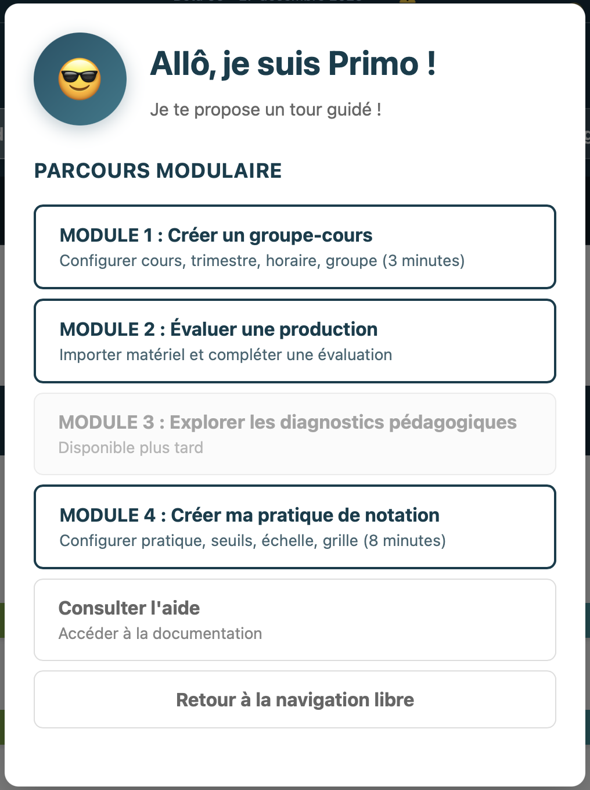

État des lieux
Suivi de l'apprentissage et priorisation des interventions
Observer
🧭
Intervenir
🧭
Développement du groupe
💡 Cliquez sur une courbe ou un nom pour la verrouiller. Cliquez ailleurs pour déverrouiller.
Développement individuel
🧭
💡 Chaque point représente le résultat d'un étudiant sur un artefact. Les zones denses révèlent les tendances du groupe ; les trajectoires isolées méritent attention.
Liste des étudiant·es 🧭
Consultation de la liste complète et accès aux portfolios individuels
Étudiant·es inscrit·es
| #↕ | DA↕ | Groupe↕ | Nom↕ | Prénom↕ | SA |
A (assiduité)↕ |
C (complétion)↕ |
P (performance)↕ |
E (engagement)↕ |
Pattern↕ | RàI↕ | Interv. |
|---|
Sélectionnez un·e étudiant·e depuis la liste pour voir son profil.
Planification et documentation des interventions
Gardez une trace des interventions de niveau 2 et 3
Aperçu des présences 🧭
Vue d'ensemble des statistiques de présence du groupe
Statistiques du groupe
Calendrier des présences
Vue calendaire
Enregistrement quotidien
Enregistrer les présences pour une séance
Liste des étudiant·es (0 étudiant·e)
| DA | Prénom | Nom |
Présence
|
Notes | Total pér. | Assiduité |
|---|---|---|---|---|---|---|
| Sélectionnez une date pour afficher le tableau de saisie | ||||||
Aperçu des évaluations 🧭
Vue d'ensemble des évaluations du groupe
Statistiques du groupe
Historique et filtres
Vue d'ensemble des évaluations et calcul automatique des indices C et P
Filtres
Chargement des évaluations...
| DA ↕ | Nom ↑ | Prénom ↕ | Production ↕ | Jeton ↕ | Niveau ↕ | Note % ↕ | Actions |
|---|
Aucune évaluation ne correspond aux filtres sélectionnés
Évaluation des productions et rétroaction différenciée automatique
Évaluation détaillée selon les critères et les échelles de performance
Paramètres de l'évaluation
Les travaux non recevables sont exclus des calculs de moyenne.
Évaluation et prévisualisation de la rétroaction
Sélectionnez une grille et une cartouche
Rétroaction finale
Chargement du module Travaux...
Chargement de la visionneuse...
Chargement de l'archivage...
Vue d'ensemble 🧭 🧭
Résumé du matériel pédagogique configuré
Ressources configurées
Productions étudiantes 🧭 🧭
Définir les évaluations du cours et leurs pondérations
Grilles de critères 🧭 🧭
Créer des grilles de critères réutilisables pour évaluer différents types de productions.
Échelles de performance 🧭
Configuration de l'échelle de notation pour les PAN/SBG
Pratiques de notation 🧭
Configure tes pratiques de notation (SOM, STD, SPE, DEN)
Cartouches de rétroaction 🧭 🧭
Créer des cartouches de rétroaction basées sur les critères et l'échelle de performance
Questions Flash
Tirage au sort
Relier deux éléments en tirant d'un port à l'autre.
Déposer un élément dans une Séquence ou une Leçon pour l'y intégrer.
🧬 Cloner un élément : double-cliquer pour ouvrir le panneau, puis « Cloner ».
Les informations se propagent à toutes les copies.
Organisateur
Ajoute des éléments à la carte.
Organisateur
Ajoute des éléments à la carte.
Aperçu de la configuration
Résumé de la configuration actuelle du système. Les statistiques sont calculées en temps réel depuis les données stockées localement.
Informations légales et crédits
Auteur : Grégoire Bédard
Codé avec : Claude Code (Anthropic)
Licences :
- Code source : AGPL v3.0 (voir licence)
- Contenu pédagogique : CC BY-NC-SA 4.0 (voir licence)
La licence non-commerciale (NC) protège le travail des enseignants tout en favorisant le partage et le bien commun en éducation. Pour plus de détails, consultez le fichier LICENSE.md.
Configuration du trimestre
Définis les paramètres administratifs du trimestre : dates de début et de fin, semaines spéciales, congés prévus et imprévus avec leurs reprises éventuelles.
Cadre régulier
Bornes du trimestre
Semaines spéciales
Semaine de planification et de mise à jour
Semaine d'examens
Trimestre : 0 semaines • 0 jours de cours • 0 congés
Aménagements
Congés fériés et activités institutionnelles
Congés fériés, journées pédagogiques, journée Carrière, etc. avec leurs reprises éventuelles
Aucun événement prévu déclaré.
Événements imprévus
Pour les événements imprévus (maladie, conditions météorologiques, urgence, autre, etc.), la reprise peut être planifiée après coup selon les circonstances.
Aucun événement imprévu déclaré.
Configuration du cours 🧭
Informations techniques du cours : code, nom, compétences, enseignant·e, trimestre, format horaire
Configuration de l'horaire 🧭
Définis le format horaire hebdomadaire de tes séances de cours
Horaire des séances
Configure tes séances de cours de la semaine (de 1 à 6 séances). Chaque séance peut avoir une durée différente (de 1h à 6h).
Aucune séance configurée.
Configuration du groupe d'étudiants 🧭
Liste complète des étudiants inscrits : ajout, import, modification, export
Groupe d'étudiants
Ajouter un·e étudiant·e manuellement
Importer des étudiants (CSV/TSV ou copier-coller)
Section Legacy désactivée
Utilise la section Trimestre V2 pour gérer les étudiants
Pratiques de notation 🧭 🧭
Configurer la pratique d'évaluation du cours
Configuration des seuils d'interprétation 🧭 🧭
Ajuste les seuils utilisés pour interpréter les données pédagogiques et détecter les patterns d'apprentissage
💡 Rappel : Conditions pour la détection des patterns
Les patterns d'apprentissage (progression stable, défi spécifique, blocages) sont identifiés en analysant l'évolution des performances sur chaque critère d'évaluation au fil du temps. Cette analyse longitudinale n'est possible que si tu utilises les mêmes critères et la même échelle de performance pour tous les artefacts évalués durant le trimestre.
Si tu varies les critères ou les échelles entre les productions, le système ne pourra pas établir de comparaisons valides et les patterns ne seront pas détectables. Dans ce cas, concentre-toi sur les indices A-C-P et les niveaux RàI pour le dépistage.
R (dépistage) : Toujours basé sur les N dernières productions pour détecter les tendances et intervenir au bon moment.
Recommandé avec modalité "N meilleurs" pour valoriser le progrès tout en détectant les décrochages.
Fenêtre d'analyse des patterns
Nombre de productions récentes à analyser pour détecter les patterns d'apprentissage (progression, stagnation, difficulté croissante).
Artefacts nécessaires avant détection :
- 3 productions → Détection dès 4 artefacts (recommandé)
- 5 productions → Détection dès 6 artefacts
- 7 productions → Détection dès 8 artefacts
Exemple : Avec 9 artefacts dans la session et une fenêtre de 3, les patterns seront détectables dès le 4e artefact (semaine 6 environ), laissant le temps d'intervenir avant la fin de la session.
Détection de la progression
Différence minimale entre moyennes pour considérer qu'il y a progression (↗) ou régression (↘).
Exemple : Avec un seuil de 10 points, si un étudiant passe de 70% à 81%, cela sera considéré comme une progression (↗). De 70% à 78%, ce sera stable (→).
Évolution du risque
Variation minimale du risque pour afficher une flèche (→ ou ←). En dessous, un tiret (—) indique un plateau.
Exemple : Avec un seuil de 5 points, si le risque passe de 0.40 à 0.46, cela affichera (→). De 0.40 à 0.44, ce sera (—).
Identification des défis SRPNF
Score en dessous duquel un critère SRPNF est considéré comme un défi spécifique nécessitant une attention particulière.
Exemple : Avec un seuil de 71.25%, un critère à 70% sera identifié comme défi, mais un critère à 72% ne le sera pas.
Actions
Captures de progression
Gestion des captures automatiques et manuelles des données de progression longitudinale
Les captures enregistrent automatiquement l'état des indices A-C-P-E à des moments clés :
- Hebdomadaires : Chaque semaine, une capture est créée avec les indices actuels de tous les étudiants
- Interventions : Lors de la complétion d'une intervention RàI, une capture "après" est enregistrée pour mesurer l'impact
- Reconstruction rétroactive : Recalcule les captures historiques à partir des données existantes
Statut actuel du système
Actions disponibles
Capture manuelle
Capture immédiate de tous les étudiants avec les indices actuels. Utile pour marquer un moment important dans la session.
Reconstruction rétroactive
Recalcule toutes les captures hebdomadaires depuis le début du trimestre en utilisant les données d'évaluations et de présences existantes. Cette opération peut prendre quelques secondes.
⚠️ Attention : Cette action va recalculer et remplacer les captures hebdomadaires existantes.
Nettoyage des données
Supprime toutes les captures enregistrées. Cette action est irréversible.
⚠️ Les graphiques de progression seront vides après cette opération.
Gestion des données
Sauvegarde et restauration des données locales
Sauvegarde et restauration
Gère tes données locales : exporte pour sauvegarder, importe pour restaurer.
Exporter les données
Sauvegarde tes données dans un fichier JSON. Tu pourras choisir quelles données exporter (toutes ou sélection personnalisée).
💡 Exporte régulièrement pour éviter toute perte de données.
Importer des données
Restaure des données depuis un fichier JSON exporté précédemment.
Configuration pédagogique complète (Beta 91)
Exporte ou importe une pratique pédagogique complète avec tous ses outils : échelles, grilles, productions, cartouches et paramètres du cours.
📦 Exporter une configuration complète
Rassemble toutes les ressources de ton cours dans un package pédagogique partageable : échelles, grilles, productions, cartouches et paramètres.
L'export génère automatiquement un fichier JSON + un fichier LISEZMOI.txt avec les métadonnées et les instructions d'utilisation.
💡 Idéal pour partager une pratique pédagogique avec des collègues ou conserver une configuration de cours.
📥 Importer une configuration complète
Importe une configuration pédagogique exportée précédemment. Le système détectera automatiquement le type de fichier et affichera un aperçu avant l'import.
À propos des sauvegardes
Backup complet vs Configuration pédagogique vs Import/Export partiel
Backup complet (boutons "Exporter/Importer les données" ci-dessus) : Sauvegarde toutes tes données d'application (cours, trimestre, étudiants, évaluations, présences, etc.).
Configuration pédagogique complète (nouveau - Beta 91) : Exporte uniquement le matériel pédagogique réutilisable (échelles, grilles, productions, cartouches, paramètres) dans un package partageable avec métadonnées CC BY-NC-SA 4.0.
Import/Export partiel : Importe/exporte des ressources individuelles via les boutons dans les sections :
- Construction de la note → Productions : Import/export des évaluations
- Construction de la note → Critères d'évaluation : Import/export des grilles
- Construction de la note → Niveaux de performance : Import/export des échelles
Réinitialisation complète
Efface toutes les données et revient à l'état initial. Cette action est irréversible.
Triple confirmation requise + mot de passe "EFFACER" pour sécurité
Informations
- Stockage : Local dans le navigateur (localStorage)
- Format : Fichiers JSON lisibles
- Compatibilité : Fonctionne sur tous appareils
- Sécurité : Aucune donnée envoyée sur internet
- Limite : ~5-10 Mo selon navigateurs
Trimestre
Configuration du cadre temporel et organisationnel du trimestre actif.
▶ Gestion des trimestres
Identification du trimestre
Ces informations identifient votre trimestre de travail et préfixent vos données.
Bornes du trimestre
Semaines spéciales
Congés fériés et activités institutionnelles
Événements imprévus
▶ Cours
Sélectionne un cours pour l'éditer ou crée un nouveau cours.
Nouveau cours
▶ Enseignant·e
—
Ces informations servent de métadonnées pour vos ressources partagées.
Modifier le profil
▶ Groupe d'étudiants
Aucun étudiant. Utilisez l'import à gauche ou le formulaire ci-dessous.
Ajouter un étudiant
Importer des étudiants
Format : DA, Groupe, Nom, Prénom, Programme, (vide), SA
▶ Horaire
Aucun horaire sélectionné
S'applique à tous les horaires.
Sélectionnez un horaire à modifier ou créez-en un nouveau.
Nouvel horaire
L'horaire sera lié à ce groupe d'étudiants.
Séances hebdomadaires
▶ Groupe-cours
Pour constituer un groupe-cours, associe : un cours + un enseignant·e + un numéro de groupe + un horaire + une pratique de notation.
Aucun groupe-cours sélectionné
Le groupe-cours actif apparaît dans l'en-tête de l'application.
Assemblez un groupe-cours
Cliquez sur « + Nouveau groupe-cours » pour sélectionner les 4 éléments à assembler.
- Le cours à enseigner
- Le numéro de groupe d'étudiants
- L'horaire des séances
- L'enseignant·e responsable
Nouveau groupe-cours
Assemblez les 5 éléments pour créer un groupe-cours
Préférences
Personnalisez ton expérience : outils à exploiter, affichage et navigation.
Outils à exploiter
Activez ou désactivez les fonctionnalités selon tes besoins. Les outils désactivés seront masqués.
Affichage des ressources
Choisissez ce que tu veux voir dans l'interface.
Expérience visuelle
Options d'animation et d'effets visuels.
Navigation
Dépistage
Configuration du dépistage des patterns d'apprentissage et seuils d'interprétation des indices.
Configuration du dépistage
Paramètres utilisés pour la détection des patterns et l'identification des forces/défis. La détection des patterns nécessite d'utiliser la même grille et la même échelle pour tous les artefacts évalués durant le trimestre.
R (dépistage) : Toujours basé sur les N dernières productions pour détecter les tendances.
Recommandé avec «N meilleurs» pour valoriser le progrès tout en détectant les décrochages.
Seuils de détection avancés
Seuils d'interprétation
▼Personnalisez les seuils pour l'interprétation des indices A-C-P.
Données
Sauvegarde, restauration, gestion des ressources pédagogiques et maintenance.
Sauvegarde et restauration
Exporte tes données pour les sauvegarder ou les partager, ou importe un fichier existant.
Sauvegarde complète
Toutes tes données : cours, étudiants, présences, évaluations, etc.
Pour restaurer sur cet appareil ou un autre.
Configuration pédagogique
Uniquement les outils : grilles, échelles, productions, cartouches.
Pour partager avec des collègues (CC BY-NC-SA).
Importer un fichier
Sauvegarde personnelle ou configuration d'un collègue.
Le type sera détecté automatiquement.
Captures et recherche
▼Captures de progression (Snapshots)
Les captures enregistrent l'état des indices A-C-P-E à des moments clés pour le suivi longitudinal.
Capture manuelle immédiate
Recalcule depuis le début
Efface toutes les captures
Export anonymisé pour la recherche
Génère un export anonymisé des données d'apprentissage pour la recherche en éducation.
Aucune donnée nominative n'est incluse.
Maintenance
▼Réinitialisation complète
Efface toutes les données et revient à l'état initial. Cette action est irréversible.
Triple confirmation requise + mot de passe «EFFACER» pour sécurité
Informations techniques
- Stockage : Local dans le navigateur (IndexedDB + localStorage)
- Format : Fichiers JSON lisibles
- Compatibilité : Fonctionne sur tous appareils
- Sécurité : Aucune donnée envoyée sur internet
- Capacité : Plusieurs Go (IndexedDB)
Gestion avancée des ressources
Outil de développement pour auditer et nettoyer les ressources pédagogiques accumulées.
Sélectionnez un type de ressource ci-dessus pour afficher la liste.
Notes de version
Historique des changements majeurs
▼ Beta 97.5 — Suivi d'étudiants au tableau de bord
13 février 2026
Suivi d'étudiants
- Panneau de suivi : Bouton « Suivi » dans la section Observer pour tracker jusqu'à 5 étudiants. Badges semi-transparentes style palette Océan.
- Points colorés : Les points des étudiants suivis deviennent des billes 3D colorées (danger, laiton, succès, sarcelle, alerte) dans toutes les barres ACPE, Patterns et RàI.
- Lien point ↔ badge : Cliquer un point sur une barre surligne la badge correspondante dans le panneau.
- Nettoyage automatique : Les entrées d'un autre groupe sont retirées automatiquement.
- Compatibilité : Mode anonymisation et mode archive pris en charge.
▼ Beta 97.5 — Tour guide & accueil enrichi
12 février 2026
Tour guide 🧭
- Primo → Tour guide : L’emoji 😎 est remplacé par 🧭 dans toute l’interface (boutons, popups, glossaire, aide, wizard).
- Activation par checkbox : Nouvelle option sur la page d’accueil pour activer le tour guide. La préférence persiste entre les sessions.
- Icônes contextuelles : Les 🧭 d’aide apparaissent/disparaissent en temps réel selon l’état du toggle.
Accueil élargi
- 10 cartes d’action : Grille passée de 4 à 5 colonnes. Conteneur élargi à 1200 px.
- 🎯 Construire la note : Ouvre directement le wizard de création de pratique.
- 🛟 Préparer des interventions : Navigue vers la planification RàI (niveaux 1, 2, 3).
▼ Beta 97.4 — Alignement pédagogique
8 février 2026
Système de clonage 🧬
- Cloner un élément : Double-cliquer pour ouvrir le panneau, puis « Cloner ». Les clones partagent titre et description — modifier l'un met à jour les autres.
- Indicateur visuel : Les clones affichent 🧬. Survoler l'indicateur met en surbrillance toutes les instances.
- Badges agrégés : Les liens de tous les clones sont pris en compte pour la validation des badges.
Verbes de liaison refondus
- 5 verbes verticaux (automatiques) : se décline en, se concrétise dans, s'acquiert par, se vérifie par, s'appuie sur.
- 2 verbes horizontaux (au choix) : complète, conduit à — pour les relations entre éléments de même niveau.
- Direction amont → aval : les liens partent de l'intention (compétence) vers la réalisation (activité). Migration automatique des anciens liens.
- Sélection de verbe : Cliquer sur un lien pour modifier son verbe parmi les options autorisées.
Évaluations
- Nouveau type : Évaluation (rose/magenta) ajouté à la palette.
- Intégration : Peut être insérée dans les leçons et reliée aux idées maîtresses et connaissances.
- Panneau dédié : Champs Rétroaction et Production directement dans le panneau d'information.
Améliorations UX
- Carte d'aide flottante : Déplaçable, redimensionnable, fermable. Bouton « ? » dans la palette pour la réafficher.
- Espacement conteneurs : Distance entre éléments augmentée pour faciliter le traçage des liens.
- Onglet renommé : « Carte mentale » devient « Alignement pédagogique ».
▼ Beta 97.3 — Planification (carte initiale)
7 février 2026
Nouvel onglet Planification
- Carte mentale : Organisez visuellement vos compétences, séquences, leçons et activités. Deux zones de travail : Objectifs & Savoirs (gauche) et Organisation & Activités (droite).
- 10 types de nœuds : Compétence, idée maîtresse, connaissance, préalable, stratégie, séquence, leçon, activité, soutien, révision — chacun avec sa couleur distinctive.
- Liens visuels : Reliez les nœuds entre eux par clic pour matérialiser les relations pédagogiques (compétence → séquence → leçon → activité).
Panneau Séances
- Vue calendrier : Panneau latéral pour visualiser la répartition des séquences et leçons sur les semaines du trimestre.
- Export : Export en texte brut ou en TSV (compatible tableur).
Fonctionnalités
- Multi-cartes : Créez plusieurs cartes mentales, renommez-les, passez de l'une à l'autre.
- Import/Export JSON : Sauvegardez et partagez vos cartes.
- Glisser-déposer : Créez des nœuds en glissant depuis la palette vers la zone de travail.
- Sélection avancée : Rectangle de sélection, multi-sélection avec ⌘+clic, zoom avec ⌘+/−.
▼ Beta 97.3 — Annotation et évaluation
7 février 2026
Améliorations de l'annotation
- Zoom adaptatif : Deux modes « Pleine largeur » et « Pleine hauteur » remplacent les boutons +/− pour un affichage optimal.
- Épaisseur relative à la résolution : Le trait s'adapte automatiquement à la résolution de l'image. Le slider affiche la valeur en pixels réels.
- Sélection et édition : Nouvel outil Sélection pour déplacer, redimensionner et supprimer les annotations existantes.
Intégration évaluation
- Bouton Évaluer : Depuis l'annotation, accédez directement au formulaire d'évaluation avec l'étudiant et la production pré-remplis.
- Dossier PDF complet : Bouton « Dossier PDF » dans la liste des évaluations — génère un PDF unique (travail annoté + grille + rétroaction).
Interface
- Design system : Boutons de la toolbar colorés, flèches de pagination, zéro couleur hardcodée dans le module Travaux.
- Avertissements retirés : Les bandeaux « en développement » et « résolution » sont retirés de la page Annoter.
Correctifs
- Export PDF des annotations sur fichiers PDF (#112)
- fontSize exponentielle lors du redimensionnement (#113)
- Sélection fantôme au changement de page (#114)
- EXPORT_SCALE non propagé à l'archivage (#115)
- Event listeners accumulés dans la visionneuse (#116)
- Backspace intercepté dans les formulaires (#117)
- Aperçus présences et évaluations vides — exports IIFE manquants (#122)
▼ Beta 97 — Module Travaux
6 février 2026
Nouvel onglet Travaux
- Annotation intégrée : Gestion complète des travaux étudiants directement dans Monitorage (import, annotation, archivage).
- 3 sous-sections : Import, Visionneuse et Archivage accessibles depuis l'onglet Travaux.
Import de fichiers
- Drag-and-drop : Glissez vos PDF et images (JPEG, PNG, HEIC, WebP) dans la zone de dépôt.
- Détection automatique du DA : Le numéro d'admission est extrait du nom de fichier (ex: "Audet_9000175_travail.pdf").
- Jumelage par nom : Si le DA n'est pas trouvé, recherche par nom/prénom dans le fichier.
- Association manuelle : Dropdown pour corriger ou associer un étudiant avant l'import.
- Compression images : Les images dépassant 2000px sont automatiquement redimensionnées (JPEG 85%).
Visionneuse intégrée
- Rendu PDF natif : Affichage des PDF via PDF.js directement dans l'application.
- Navigation multi-pages : Boutons précédent/suivant et indicateur de page.
- Zoom : Zoom avant/arrière par paliers de 25%, ajustement automatique à la fenêtre.
- Sidebar miniatures : Liste des fichiers avec filtrage par étudiant.
- Pré-rendu : Les pages adjacentes sont pré-rendues en arrière-plan pour une navigation instantanée.
Annotation au stylet
- Outils de dessin : Stylo (rouge par défaut), surligneur (jaune, semi-transparent), gomme (supprime le trait entier au contact).
- Formes et symboles : Cercle, flèche, rectangle, crochet (correct) et croix (incorrect).
- Texte : Ajoutez des commentaires positionnés sur le document.
- 6 couleurs : Rouge, bleu, vert, orange, noir, violet.
- Apple Pencil : Sensibilité à la pression (courbe Hermite), rejet de la paume, événements coalescés pour fluidité maximale.
- Annuler/Rétablir : Ctrl+Z / Ctrl+Maj+Z, jusqu'à 50 niveaux.
- Sauvegarde automatique : Les annotations sont sauvegardées automatiquement après 2 secondes d'inactivité.
Intégration avec les évaluations
- Bouton « Voir le travail » : Visible dans la page d'évaluation quand un fichier est associé à l'étudiant.
- Vue côte à côte : Le travail s'affiche à gauche, la grille de critères à droite. Annotez tout en évaluant.
- Section Profil étudiant : Nouvelle section « Travaux soumis » avec grille de miniatures et badge d'annotation.
Archivage et export
- Export par étudiant : Téléchargez un ZIP contenant tous les travaux d'un étudiant (originaux + annotés).
- Export par production : Tous les travaux soumis pour une production donnée.
- Export semestre complet : Archive complète organisée par étudiant.
- Moniteur de stockage : Barre de progression avec alerte à 80% de capacité et suggestion de nettoyage.
Optimisations
- File System Access API (Mac) : Option pour stocker les fichiers sur votre disque au lieu d'IndexedDB. Recommandé pour les gros volumes.
- Scroll virtuel : Les listes de 50+ miniatures utilisent le rendu virtuel pour maintenir la fluidité.
- Stockage persistant : Demande automatique de persistance au navigateur pour protéger les données.
35 correctifs (6 février)
- 5 bugs critiques : Clé productions unifiée, suppression demo sécurisée, calcul heures/assiduité corrigé, format présences normalisé, IDs uniques (crypto).
- 9 bugs haute priorité : Noms de clés corrigés dans 5 modules, filtrage assiduité par étudiant, taux de complétion, tri « récents-meilleurs » par date, race condition demo, éléments DOM protégés.
- 10 bugs moyenne priorité : Catch silencieux remplacés par diagnostics, clé legacy niveauxEchelle migrée, anonymisation crypto, double-stringify export corrigé, filtrage demo à l'export, timing db-ready, statistiques d'archive sur bon trimestre, évaluations remplacées exclues, Math.cbrt pour négatifs, tendance triée par date.
- Namespacing renforcé : ~50 localStorage directs migrés vers db.js, 5 clés ajoutées à CLES_NAMESPACEES, storage listener corrigé, 12 fonctions dupliquées consolidées.
- Design system : ~35 couleurs Material Design → variables CSS, border-radius harmonisés, tokens badges ajoutés, validation primo en classes CSS, box-shadows normalisés, en-tête styles.css mis à jour.
▼ Beta 96 — Visualisations avancées et stabilisation
25-26 janvier 2026
Nouveaux graphiques (Tableau de bord)
- Graphique spaghetti ACP : Trajectoires d'évolution de tous les étudiants (indices A, C, P par semaine).
- Graphique spaghetti par production : Résultats bruts par artefact montrant la volatilité réelle de l'apprentissage.
- Courbes de distribution ACPE : Densité de probabilité (KDE) pour visualiser la répartition du groupe.
- Mini-courbes de Gauss : Superposées sur chaque barre ACPE avec μ et ±σ.
Réorganisation du tableau de bord
- 4 sections distinctes : Observer, Intervenir (Patterns + RàI), Développement du groupe, Développement individuel.
- Uniformisation visuelle : Tous les graphiques adoptent le même style (échelle Y dynamique, zones IDME, survol interactif).
- Points uniformisés : Style blanc par défaut, noir au survol/sélection pour tous les graphiques.
Corrections importantes
- Export PDF (#30) : Affiche maintenant les infos cours et enseignant (fallbacks multiples vers profilEnseignant).
- Indice P = Note finale (#37) : L'indice P reflète maintenant la vraie note de session (méthode de sélection, pondérations, conformité).
- Aperçu des présences : Taux d'assiduité aligné sur le tableau de bord (sommatif uniquement, filtrage groupe actif).
- Anonymisation archives : Les noms sont correctement anonymisés dans les graphiques spaghetti.
- Clic sur noms étudiants : Le verrouillage fonctionne dans tous les graphiques (ratio scale CSS/canvas).
Import historique A2024
- Archivage complet : 55 étudiants, 2 groupes, 14 artefacts, 750 évaluations, 1650 présences.
- Échelle IDME documentée : I=40%, D=65%, M=85%, E=100%.
- Pratique configurée : 6 artefacts récents (60%) + Analyse finale (40%).
- Trimestre en lecture seule : Données historiques protégées.
▼ Beta 95.3-95.7 — Stabilisation et UX
9-24 janvier 2026
Aide contextuelle (Beta 95.6)
- 15 sections d'aide : Boutons dans toutes les zones critiques.
- Tutoiement systématique : Ton chaleureux et accessible.
- Ordre de configuration clarifié : Échelles → Pratiques → Grilles → Productions.
Calcul d'assiduité corrigé (Beta 95.7)
- Formule en périodes : periodesPresentes / periodesOffertes (au lieu d'heures).
- Moyenne A du groupe : Affichée dans l'en-tête et sur la barre Assiduité.
- Points individuels : Distribution visible sur la barre (26 points à 100%, 2 à 0%).
- Saisie numérique : Input numérique au lieu de dropdown (permet 1.5 périodes).
Corrections multi-trimestres (Beta 95.3-95.5)
- Compatibilité A2025 : Détection format ancien (SOM/PAN) vs nouveau (pratique unique).
- Bug anonymisation corrigé : Liste étudiants vide en mode anonymisé (groupeReel préservé).
- Filtrage présences : Présences correctement filtrées par groupe-cours actif.
- Namespacing complet : groupesCours et horaires ajoutés à CLES_NAMESPACEES.
UX améliorée (Beta 95.4-95.6)
- Séparation modal Bienvenue : News (nouveautés) + Introduction (guide démarrage).
- Catégories Selection/Obligatoires : Deux cartes avec checkboxes exclusives.
- Badge nb étudiants : Uniformisé dans Vue d'ensemble et Liste.
- Vue calendaire corrigée : Affiche les bons jours selon groupe-cours actif.
Maintenance (Beta 95.3)
- Audit module évaluation : 3 problèmes critiques résolus (namespacing, groupe-cours, validations).
- Import depuis trimestre : Échelles, grilles, productions réutilisables.
- Nommage exports standardisé : type-nom-cours-discipline-date.json.
- Design System v7 : Audit conformité border-radius et box-shadow.
▼ Beta 95.2 — Architecture modulaire groupe-cours
6-8 janvier 2026
Séparation des entités
- Toggle Cours : Informations générales uniquement (code, nom, compétence).
- Toggle Enseignant·e : Profil auteur séparé (prénom, nom, courriel, institution, niveau).
- Toggle Horaire : Séances hebdomadaires configurables (jours, heures, local).
- Toggle Groupe-cours : Assemblage via dropdowns (cours + enseignant + horaire + pratique).
Profil auteur pour métadonnées CC
- Source unique : L'enseignant·e du groupe-cours actif alimente automatiquement les métadonnées Creative Commons.
- Plus d'édition manuelle : Les informations auteur sont centralisées dans le toggle Enseignant·e.
Migration automatique
- Extraction des enseignants : Les informations enseignant sont extraites de listeCours vers la nouvelle entité.
- Extraction des horaires : Les séances hebdomadaires sont converties vers l'entité Horaire.
- Création des groupe-cours : Les associations sont recréées automatiquement.
- Rétrocompatibilité : listeCours reste lisible pour les modules legacy.
▼ Beta 95 et versions antérieures
Septembre 2025 — janvier 2026
Beta 95 — Stabilisation H2026
- Gestion multi-trimestres : A2025, H2026, etc. avec archivage automatique.
- Gestion multi-cours : Plusieurs cours par trimestre avec données isolées.
- Sauvegarde et protection : Rappel de backup périodique, export/import amélioré.
Beta 94 — Snapshots et suivi longitudinal
- Captures automatiques : Snapshots hebdomadaires de la progression.
- Graphiques d'évolution : Indices A-C-P dans le temps avec Chart.js.
Beta 93 — Système universel de critères
- Critères configurables : N'importe quelle grille de critères.
- Recommandations génériques : Interventions RàI adaptées.
Beta 91-92 — IndexedDB et Primo
- Stockage hybride : IndexedDB + localStorage (capacité GB).
- Assistant de configuration : Parcours guidé pour nouveaux utilisateurs.
Beta 90 — Présentation AQPC
- Système de pratiques modulaire : Sommative, PAN-Standards, etc.
- Engagement (E) : Remplacement du concept de « Risque d'échec ».
- Barres de distribution : Nuages de points avec gradients.
Introduction au système de suivi
« L'observation des micro données permet de faire des interventions proactives qui supportent mieux l'apprenant·e dans son parcours. »
▼ Présentation de l'application
L'intelligence artificielle n'est peut-être pas l'instrument idéal pour soutenir un·e enseignant·e dans l'accompagnement de l'apprentissage. L'expert·e, c'est toujours l'enseignant·e, pas l'outil.
Cette application de suivi des apprentissages permet de capturer les micro data générées dans la classe, de les trier et de les interpréter afin de mieux organiser l'apprentissage et l'accompagnement des élèves.
Qu'est-ce que les micro data ?
Les micro données sont des informations créées, collectées et traitées localement par un·e enseignant·e tout au long du trimestre : présences, notes, observations, interventions. Ces données sont généralement perdues en fin de session.
L'application permet de mettre en relation ces informations pour créer des portraits dynamiques de l'apprentissage, tant individuels que collectifs.
Une architecture pensée pour l'alignement pédagogique
Cette application propose une architecture pensée dès le départ pour accueillir différentes approches pédagogiques. Elle permet de fixer des paramètres qui serviront à construire la note.
Basée sur le principe de l'alignement pédagogique, des objectifs d'apprentissage jusqu'à la rétroaction, elle permet de créer, d'organiser et d'aligner :
- Productions étudiantes (artefacts, portfolios)
- Grilles d'évaluation critériées
- Échelles de performance
- Cartouches de rétroaction
Le tout sur des pratiques de notation conséquentes, qu'elles soient traditionnelles ou alternatives.
Fonctionnalités principales :
- Tableau de bord : Indicateurs globaux A-C-P-E, détection précoce des difficultés
- Portraits individuels : Profil détaillé de chaque étudiant avec forces, défis et recommandations
- Captures hebdomadaires : Vue longitudinale de la progression (snapshots)
- Rétroactions personnalisées : Assemblage automatique de commentaires selon tes cartouches
- Pratiques de notation : Support PAN-Standards, Sommative et autres pratiques
Autonomie et sobriété
L'application fonctionne entièrement en local, directement dans ton navigateur. Les données sont stockées sur ton appareil (localStorage/IndexedDB), sans aucun transfert cloud. Aucune IA générative n'est utilisée pour l'analyse.
▼ Qu'est-ce que le suivi de l'apprentissage ?
Le système transforme ton intuition pédagogique en intelligence prédictive.
Ce système formalise et systématise ce que tout enseignant fait intuitivement : observer ses étudiants, détecter les difficultés émergentes et ajuster ses interventions. Cette formalisation apporte :
- Objectivité : Données factuelles plutôt qu'impressions
- Systématicité : Suivi régulier et exhaustif
- Prédictivité : Détection précoce des signaux faibles
Architecture modulaire et flexible :
Le système s'adapte à ta pratique de notation existante. Tu peux configurer :
- Vos grilles d'évaluation : Crée tes propres critères selon ta discipline
- Ton échelle de notation : Échelle qualitative (IDME) ou notes chiffrées (0-100%)
- Ta pratique pédagogique : Évaluation par compétences (PAN) ou sommative traditionnelle
📝 Exemple : Pratique PAN-Standards
La pratique PAN-Standards développée par Grégoire utilise :
- Critères SRPNF : Structure, Rigueur, Plausibilité, Nuance, Français
- Échelle IDME : Basée sur la taxonomie SOLO (Insuffisant, Développement, Maîtrisé, Étendu)
- RàI (Réponse à l'Intervention) : Détection patterns et niveaux d'intervention
Cette pratique est un exemple parmi d'autres possibilités.
▼ Les trois indices primaires (A-C-P)
A - Assiduité
Présence en classe - Mesure l'engagement cognitif
Module source : saisie-presences.js
Les étudiants assidus sont davantage exposés au contenu, aux explications et aux pratiques guidées.
C - Complétion
Remise des travaux - Mesure la mobilisation
Module source : portfolio.js
Reflète la constance et la persévérance dans les efforts, la régularité d'exécution et le respect des délais.
P - Performance
Qualité des productions - Mesure la maîtrise
Module source : portfolio.js
Évalue la qualité des travaux selon tes critères et ton échelle de notation.
Le calcul dépend de ta pratique : en PAN-Standards, P = moyenne des N meilleurs artefacts (IDME). En Sommative, P = moyenne pondérée de toutes les évaluations (0-100%).

Vue des indicateurs globaux A-C-P-E dans le tableau de bord
▼ Exemple de grille : SRPNF (pratique PAN-Standards)
Inspirés de l'approche ELLAC (Enseignement de la Lecture Littéraire Au Collégial)
| Critère | Pondération | Description |
|---|---|---|
| Structure | 15% | Organisation logique des idées |
| Rigueur | 20% | Exhaustivité des observations |
| Plausibilité | 10% | Crédibilité de l'interprétation |
| Nuance | 25% | Qualité du raisonnement |
| Français | 30% | Maîtrise linguistique |
💡 Crée tes propres grilles
Ces critères sont un exemple spécifique à l'enseignement de la littérature. Tu peux créer tes propres grilles adaptées à ta discipline dans Construction de la note → Critères d'évaluation.
▼ Exemple d'échelle : IDME (pratique PAN-Standards)
L'échelle IDME traduit la profondeur de compréhension selon la taxonomie SOLO de Biggs & Collis :
| IDME | SOLO | Score | Compréhension |
|---|---|---|---|
| I - Insuffisant | Préstructurel / Unistructurel | < 64% | Incompréhension ou superficielle |
| D - Développement | Multistructurel | 65-74% | Points pertinents sans liens |
| M - Maîtrisé | Relationnel | 75-84% | Compréhension globale avec liens |
| E - Étendu | Abstrait étendu | ≥ 85% | Transfert à autres contextes |
📌 Autres échelles possibles
L'échelle IDME est utilisée en pratique PAN-Standards pour évaluer la profondeur de compréhension. D'autres pratiques utilisent des moyennes pondérées traditionnelles (0-100%) ou des échelles personnalisées. Configurez ton échelle dans Construction de la note → Niveaux de performance.

Interface de configuration d'une échelle de performance
▼ Architecture : Single Source of Truth
Principe fondamental : Chaque donnée a UNE source unique qui la génère et la stocke. Les autres modules la lisent via localStorage.
MODULE SOURCE (génère/stocke)
trimestre.js → calendrierComplet
saisie-presences.js → indicesAssiduiteDetailles
portfolio.js → indicesCP
MODULE LECTEUR (lit/affiche)
calendrier-vue.js → lit calendrierComplet
tableau-bord-apercu.js → lit indices A, C, P
profil-etudiant.js → lit indices A, C, P
Règle d'or : Les modules ne se parlent JAMAIS directement. Communication via localStorage uniquement.
▼ Trois modes d'utilisation
L'application fonctionne selon trois modes distincts :
Mode Normal
Toutes les fonctionnalités de gestion de cours et d'évaluation sont disponibles. C'est le mode par défaut pour l'utilisation quotidienne.
Mode Assisté
Active l'assistant de configuration Primo qui guide l'enseignant·e à travers les étapes de mise en place : définition du trimestre, création du cours, importation du groupe, configuration des pratiques de notation. Ce mode facilite l'appropriation de l'outil sans être surchargé par la complexité des options disponibles.
Mode Anonymisé
Masque toutes les informations nominatives (noms, DA) pour permettre :
- Des démonstrations publiques sans compromettre la vie privée
- La capture d'écran pour documentation ou formation
- La discussion de résultats entre collègues
- Le respect des exigences éthiques de la recherche
Accès aux modes
Le sélecteur de mode se trouve dans Réglages → Préférences. Le mode peut être changé à tout moment.
▼ Partage et communs éducatifs
L'application comprend un système d'import/export qui permet de partager du matériel pédagogique entre collègues :
- Grilles d'évaluation : Critères et pondérations
- Échelles de performance : Niveaux et descriptions
- Cartouches de rétroaction : Commentaires prédéfinis par critère
- Productions : Définitions d'artefacts avec échéances
- Configurations de pratiques : Paramètres complets
Import depuis un trimestre précédent (Beta 95.3)
Réutilisez votre matériel d'un trimestre à l'autre sans tout recréer :
- Échelles : Section "Importer depuis un autre trimestre" dans la bibliothèque
- Grilles : Dropdown de sélection du trimestre source
- Productions : Filtre par cours pour importer sélectivement
L'import crée des copies indépendantes - les originaux ne sont pas affectés.

Interface de partage du matériel pédagogique entre collègues
Licence Creative Commons
Tout matériel exporté est protégé par la licence CC BY-NC-SA 4.0, qui permet le partage et l'adaptation tout en préservant l'attribution à la personne autrice originale.
Cette approche favorise l'émergence de communs éducatifs : plutôt que de recommencer à zéro, on peut s'inspirer du travail de ses pairs, l'adapter à son contexte et le redistribuer à son tour.
Protection des données
Les exports de matériel pédagogique ne contiennent jamais de données confidentielles (noms d'étudiants, notes, présences). Seul le matériel réutilisable est partagé.
Nommage des fichiers export (Beta 95.3)
Les fichiers exportés suivent un format standardisé : type-nom-cours-discipline-date.json
Ex: echelle-IDME-601101-litterature-2026-01-09.json
Configuration initiale (1ʳᵉ utilisation)
Guide pas-à-pas pour configurer ton système de suivi
▼ Étapes de configuration
La configuration se fait principalement dans Réglages → Trimestre qui centralise toutes les étapes :
Workflow Beta 95 (recommandé) :
- Trimestre : Définir les dates (génère le calendrier)
- Cours : Créer ou sélectionner le cours
- Enseignant : Créer votre profil
- Groupe : Importer la liste d'étudiants (CSV/TXT)
- Horaire : Définir les séances hebdomadaires
- Groupe-cours : Assembler les 5 éléments + pratique de notation
Deux méthodes possibles :
- Méthode manuelle : Section Trimestre avec 6 accordéons (configuration détaillée)
- Méthode assistée : Primo guide conversationnellement (plus rapide)
▼ Configuration avec le tour guide 🧭
Primo est un assistant conversationnel qui te guide pas-à-pas dans la configuration de ton système de suivi.

Quand utiliser Primo ?
- Première utilisation : Primo apparaît automatiquement au premier chargement
- Nouveau cours : Pour créer rapidement un groupe-cours complet
- Découverte : Pour explorer les fonctionnalités de manière guidée
Les 4 modules de Primo :
Module 1 : Créer un groupe-cours
Durée : ~3 minutes
Questions conversationnelles pour configurer :
- Informations du cours (code, titre, groupe)
- Dates du trimestre (détecte si déjà configuré)
- Profil enseignant (détecte si existant)
- Horaire hebdomadaire
- Import de la liste d'étudiants (CSV/TXT)
- Pratique de notation (dropdown pour sélectionner)
À la fin, ton groupe-cours est créé et apparaît dans le dropdown de l'en-tête. Les données sont éditables dans Section Trimestre.
Module 2 : Évaluer une production
Prérequis : Avoir au moins un cours-groupe créé
Guide direct vers le formulaire d'évaluation avec explications contextuelles.
Module 3 : Explorer les diagnostics
Prérequis : Avoir des données (évaluations, présences)
Visite guidée du tableau de bord et des profils étudiants.
En développement
Module 4 : Créer une pratique de notation
Durée : ~8 minutes
Wizard interactif pour configurer ta pratique personnalisée :
- Choix du type (PAN-Standards, Sommative, etc.)
- Configuration des paramètres (artefacts, seuils, jetons)
- Sélection des grilles et échelles
Comment accéder à Primo :
- Automatiquement : Au premier chargement de l'application
- Tour guide : Cliquez sur le bouton 🧭 dans l'en-tête (visible lorsque le tour guide est activé)
- Réglages → Préférences : Activez le «Mode Assisté» pour afficher le bouton Primo
▼ 1. Configurer le cours
Navigation : Réglages → Cours
Informations à saisir :
- Code du cours : Ex. 601-101-MQ
- Titre : Ex. Écriture et littérature
- Pondération : Ex. 2-2-3
- Heures/semaine : Ex. 4 heures
- Format horaire : 2×2h, 3h ou 4h continu
▼ 2. Section Trimestre - Configuration centralisée (Beta 95)
Navigation : Réglages → Trimestre
Centre de configuration complet avec 6 accordéons
Les 6 accordéons de configuration :
- Gestion des trimestres : Dates début/fin, congés, aperçu statistiques
- Gestion des cours : Code, titre, discipline, compétence
- Profil enseignant : Multi-profils avec dropdown (Beta 95.3)
- Groupe d'étudiants : Import CSV/TXT, gestion SA/CAF
- Horaire hebdomadaire : Séances avec jour, heures, local
- Assemblage groupe-cours : Combine les 5 éléments ci-dessus
Synthèses intelligentes (Beta 95.3)
Chaque accordéon affiche une synthèse calculée dans sa barre latérale :
- Trimestre : "Hiver 2026 • 15 sem., 31 jours cours, 10 congés"
- Cours : Code + discipline + compétence
- Enseignant : Nom + courriel + institution
- Groupe : Nombre étudiants + SA + top programmes
- Horaire : Séances/semaine + heures totales + jours
- Groupe-cours : Score de complétude (ex: "4/5 éléments")
Workflow recommandé :
- Configurer le trimestre (dates, génère le calendrier)
- Créer le cours (ou sélectionner existant)
- Définir le profil enseignant
- Importer le groupe d'étudiants
- Créer l'horaire hebdomadaire
- Assembler le tout dans un groupe-cours
▼ 2b. Utiliser les données de démonstration (optionnel)
Navigation : Réglages → Trimestre → Section «Données de démonstration»
Pour explorer l'application avec des données réalistes avant de configurer tes propres données, activez le groupe de démonstration.
Activation :
- Allez dans Réglages → Trimestre
- Descendez à la section «Données de démonstration»
- Cochez la case «Utiliser les données de démonstration (groupe 9999)»
- Le groupe demo est immédiatement chargé dans l'application
Contenu du groupe demo (groupe 9999) :
- Cours : 601-101 Écriture et littérature (H2026)
- Enseignant : Primo Primavera (fictif)
- 10 étudiants : Noms fictifs avec programmes variés (500.A1, 200.B0, 300.A0, etc.)
- 4 productions : Artefacts portfolio avec échéances échelonnées
- 40 évaluations : Notes réalistes selon l'échelle IDME (réparties sur les 4 artefacts)
- 8 semaines de présences : Générées dynamiquement avec pattern réaliste (92% assiduité moyenne)
- Grilles et échelles : Grille SRPNF + Échelle IDME + cartouches de rétroaction
Expérience complète du système
Avec le groupe demo, tu peux :
- Tableau de bord : Visualiser les indices A-C-P de 10 étudiants
- Profils individuels : Explorer les diagnostics, patterns, niveaux RàI
- Graphiques de progression : Voir l'évolution sur 8 semaines
- Liste des étudiants : Trier, filtrer, identifier les patterns
- Système de dépistage : Comprendre la détection des risques
Désactivation :
- Décochez la case dans Réglages → Trimestre
- Toutes les données du groupe 9999 sont supprimées automatiquement
- Vos données personnelles (si présentes) restent intactes
▼ 2c. Le concept Groupe-cours (Beta 95)
Un groupe-cours est l'assemblage de 5 éléments qui définissent complètement un contexte d'enseignement :
Les 5 composantes d'un groupe-cours :
- Cours : Le cours enseigné (601-101, etc.)
- Enseignant : Le profil enseignant associé
- Groupe étudiants : La liste des étudiants
- Horaire : Les séances hebdomadaires
- Pratique de notation : PAN-Standards, Sommative, etc.
Pourquoi le groupe-cours ?
- Contexte complet : Toutes les données sont liées (présences, évaluations, rétroactions)
- Multi-cours : Un enseignant peut avoir plusieurs groupes-cours actifs
- Basculement rapide : Dropdown dans l'en-tête pour changer de contexte
- Namespacing : Données isolées par trimestre (h2026_, a2025_, etc.)
Bibliothèque groupe-cours (Beta 95.3)
Le bouton 📚 Bibliothèque dans l'accordéon Groupe-cours ouvre une modal avec :
- Liste de tous vos groupes-cours du trimestre
- Bouton Activer pour basculer rapidement
- Bouton Supprimer avec confirmation
- Indicateur visuel du groupe-cours actif
1. Créez vos composantes dans les accordéons
2. Assemblez dans "Groupe-cours" avec les 5 dropdowns
3. Cliquez "Créer groupe-cours"
4. Le groupe apparaît dans l'en-tête et la bibliothèque
▼ 3. Créer le groupe
Navigation : Réglages → Groupe
Informations à saisir pour chaque étudiant :
- Numéro DA : Dossier administratif
- Nom : Nom de famille
- Prénom : Prénom
- Services adaptés (SA) : Si applicable
- CAF : Centre d'Aide en Français (si inscrit)
Options d'import :
- Saisie manuelle
- Import depuis fichier CSV (à venir)
▼ 4. Établir l'horaire - MODULE SOURCE
Navigation : Réglages → Horaire
Ce module GÉNÈRE les seancesCompletes (source unique)
Fonctionnalités :
- Définition des séances hebdomadaires : Jours et heures de cours
- Gestion automatique des reprises : Ex: "Horaire du lundi" se déplace au jeudi si lundi est congé
- API :
genererSeancesCompletes()etobtenirSeancesCompletes()
▼ 5. Choisir ta pratique de notation
Navigation : Réglages → Pratique de notation
Le système supporte différentes pratiques pédagogiques. Choisissez celle qui correspond à ton approche :
📝 PAN-Standards (Évaluation par compétences)
Principes : Sélection des N meilleurs artefacts, échelle IDME, système de jetons
Paramètres à définir :
- Nombre d'artefacts : 8-14 recommandé (configuration standard : 12)
- Système de jetons : 3-4 jetons maximum
- Jeton de délai : Report d'échéance sans pénalité
- Jeton de reprise : Possibilité de refaire un artefact
- Méthode de sélection : N meilleurs artefacts (permet progression sans pénaliser erreurs initiales)
📊 Sommative (Évaluation traditionnelle)
Principes : Moyenne pondérée de toutes les évaluations, notation 0-100%
Fonctionnement : Toutes les évaluations comptent selon leur pondération. Approche traditionnelle utilisée dans la plupart des disciplines.
💡 Également disponible : PAN-Spécifications (Pass/Fail par objectifs). À venir : Dénotation (Ungrading sans notes chiffrées)

Interface de configuration d'une pratique de notation
▼ 5b. Configurer la grille de critères pour le dépistage
Navigation : Réglages → Pratique de notation (section «Grille de critères pour le dépistage»)
Pourquoi configurer une grille de référence ?
Le système de dépistage identifie automatiquement les forces et défis de chaque étudiant en analysant leurs performances sur tes critères d'évaluation. Pour fonctionner, il doit savoir quels critères tu utilises dans ta discipline.
Étape 1 : Créer ta grille de critères
- Aller dans Construction de la note → Critères d'évaluation
- Cliquer sur «➕ Créer une nouvelle grille»
- Nommer ta grille (ex: «Grille SRPNF Littérature», «Rapport de labo - Chimie»)
- Ajouter tes critères d'évaluation :
- Nom : Nom du critère (ex: Structure, Hypothèse, Analyse)
- Pondération : Importance relative (ex: 20%, 30%)
- Description : Définition du critère (optionnel)
- Vérifier que la pondération totale = 100%
- Sauvegarder la grille

Interface de création d'une grille de critères avec pondérations
Étape 2 : Définir la grille comme référence
- Retourner dans Réglages → Pratique de notation
- Section «Grille de critères pour le dépistage»
- Sélectionner ta grille dans le menu déroulant
- Cliquer sur «Sauvegarder les réglages»
Exemples de grilles par discipline :
- Littérature : Structure, Rigueur, Plausibilité, Nuance, Français
- Chimie : Hypothèse, Protocole, Analyse, Conclusion
- Anthropologie : Contextualisation, Méthodologie, Analyse comparative, Réflexivité
- Mathématiques : Compréhension, Démarche, Calculs, Communication
- Histoire : Contextualisation, Analyse de sources, Argumentation, Synthèse
Comment le système utilise la grille :
- Diagnostic forces/défis : Identifie automatiquement les critères maîtrisés (≥70%) et les défis (<70%)
- Patterns d'apprentissage : Détecte progression, blocages émergents, blocages critiques
- Priorisation : Les critères avec pondération élevée sont priorisés dans les recommandations
- Suivi longitudinal : Calcule l'évolution de chaque critère au fil du temps
▼ 5c. Sous-critères avec pondération différenciée (Critères algorithmiques)
Navigation : Construction de la note → Grilles de critères d'évaluation
Qu'est-ce qu'un critère algorithmique ?
Un critère algorithmique est un type spécial de critère qui calcule automatiquement une note basée sur une formule mathématique. Le cas d'usage principal est l'évaluation du français écrit selon la formule :
Note = Pondération − (Erreurs pondérées ÷ Mots × Facteur de normalisation)
Pourquoi des sous-critères ?
Les sous-critères permettent de catégoriser les erreurs avec des pondérations différentes. Par exemple, dans certains cégeps, les erreurs de ponctuation comptent pour un demi-point (0.5) au lieu d'un point complet (1.0).
Un étudiant commet 4 erreurs : 2× ponctuation (0.5 pt chacune) + 1× syntaxe (1.0 pt) + 1× orthographe (1.0 pt)
= 0.5 + 0.5 + 1.0 + 1.0 = 3.0 points d'erreur (au lieu de 4.0)
Pour 500 mots et facteur 500 : Note = 30 − (3.0 ÷ 500 × 500) = 30 − 3.0 = 27/30
Étape 1 : Créer un critère algorithmique
- Dans ta grille de critères, ajouter un nouveau critère
- Sélectionner le type «Algorithmique»
- Définir la pondération (ex: 30%)
- Définir le facteur de normalisation (défaut: 500 mots)
Étape 2 : Ajouter des sous-critères
Tu as deux options :
Option A : Utiliser les 11 sous-critères par défaut
- Cliquer sur le bouton «📋 Utiliser sous-critères par défaut (0-10)»
- Le système crée automatiquement 11 sous-critères avec rétroactions complètes :
- Code 0 : Aucune erreur
- Code 1 : Syntaxe (construction de phrases, accord du verbe)
- Code 2 : Subordination (subordonnées mal construites)
- Code 3 : Ponctuation (virgules, points)
- Code 4 : Orthographe d'usage
- Code 5 : Homophones (ce/se, a/à, son/sont)
- Code 6 : Accords dans le GN (groupe nominal)
- Code 7 : Participes passés
- Code 8 : Mots inappropriés (anglicismes, registre)
- Code 9 : Répétitions et pléonasmes
- Code 10 : Autres erreurs variées
- Tous les sous-critères ont une pondération initiale de 1.0
Option B : Créer tes propres sous-critères
- Cliquer sur «+ Ajouter un sous-critère»
- Remplir les champs :
- Code : Identifiant court (ex: "1", "A", "syn", "pct")
- Nom : Nom descriptif (ex: "Syntaxe", "Ponctuation")
- Pondération : Poids de l'erreur (défaut: 1.0, ajustable par paliers de 0.1)
- Description/Rétroaction : Texte à afficher quand c'est le type d'erreur dominant
- Répéter pour chaque catégorie d'erreurs
- Nombre de sous-critères : illimité
Étape 3 : Personnaliser les pondérations (optionnel)
Pour adapter à la politique de ton département :
- Ponctuation = 0.5 point (demi-point)
- Erreurs graves de syntaxe = 2.0 points (doublement pénalisé)
- Erreurs mineures = 0.5 point
- Ou toute autre combinaison selon tes besoins
Comment utiliser lors de l'évaluation
- Lors de la correction, noter le code de chaque erreur rencontrée
- Dans le formulaire d'évaluation, saisir les codes séparés par des points-virgules :
3;3;1;4;4;6;1
- Saisir le nombre de mots de la rédaction
- Le système calcule automatiquement :
- Le nombre total d'erreurs (7)
- La somme pondérée (ex: 6.0 si ponctuation=0.5)
- La note finale selon la formule
- Le sous-critère dominant (MODE statistique)
- La rétroaction personnalisée selon le type d'erreur dominant
Avantages pédagogiques
- Rétroaction ciblée : L'étudiant sait exactement quel type d'erreur dominer
- Justice évaluative : Erreurs mineures pénalisent moins que graves
- Gain de temps : Codes rapides à noter pendant la correction
- Suivi longitudinal : Analyse des types d'erreurs au fil du temps
- Flexibilité disciplinaire : Adaptation aux normes de chaque département
▼ Checklist de configuration
Avant de commencer à utiliser le système, assure-toi d'avoir complété :
- [ ] Informations du cours saisies
- [ ] Calendrier du trimestre généré
- [ ] Liste des étudiants importée/saisie
- [ ] Horaire défini (si disponible)
- [ ] Pratiques PAN paramétrées
- [ ] Grille de critères créée et définie comme référence
→ Tu es prêt à commencer le suivi hebdomadaire !
▼ Qu'est-ce que l'archivage d'un trimestre ?
L'archivage permet de préserver un trimestre terminé tout en libérant l'espace pour un nouveau trimestre de travail.
Que se passe-t-il lors de l'archivage ?
- Le trimestre passe en mode lecture seule (aucune modification possible)
- Les statistiques finales sont calculées et sauvegardées
- Un snapshot des ressources (productions, grilles, échelles, pratiques) est créé
- Le trimestre reste accessible pour consultation dans la liste
Quand archiver ?
Archive un trimestre lorsque :
- Les notes finales ont été remises
- Tu ne prévois plus de modifications aux données
- Tu souhaites commencer un nouveau trimestre
Important
L'archivage est réversible. Tu peux désarchiver un trimestre si nécessaire, ce qui le remet en mode édition.
Comment archiver :
- Va dans Trimestre → Gestion des trimestres
- Clique sur Archiver à côté du trimestre souhaité
- Confirme l'action dans la fenêtre de dialogue
Formation et démonstration
Modes de fonctionnement pour explorer l'application sans risque
▼ Les trois modes de l'application
L'application offre trois modes de fonctionnement. Tu peux basculer entre eux avec le sélecteur en haut à droite de l'interface.
Mode Normal
Utilisation professionnelle — Tes vraies données
- Tes étudiants, tes évaluations, tes présences
- Données sauvegardées localement sur ton appareil
- Mode par défaut pour l'usage quotidien
🧭 Tour guide
Découverte et exploration — Données de démonstration
- Groupe fictif de 5 étudiants avec résultats complets
- 4 productions évaluées, 20 évaluations, 8 semaines de présences
- Données isolées (préfixe
demo_) — tes vraies données restent intactes - Tour guide 🧭 disponible pour te guider pas à pas
Idéal pour : Découvrir l'application, tester des fonctionnalités, voir le tableau de bord en action
Mode Anonymisé
Présentations publiques — Confidentialité protégée
- Tes vraies données avec noms fictifs automatiques
- Préfixe "AN." devant les numéros de groupe
- Lecture seule (aucune modification possible)
- Parfait pour captures d'écran et présentations

▼ Le Mode Assisté : ton terrain d'exploration
Le Mode Assisté te permet d'explorer l'application en toute sécurité avec des données fictives préchargées.
✨ Explore, clique partout, teste — tes vraies données restent protégées !
Ce que contiennent les données de démonstration :
- 5 étudiants fictifs avec profils variés
- 4 productions déjà évaluées
- 20 évaluations avec notes et rétroactions
- 8 semaines de présences avec assiduités variées
- Indices A-C-P calculés pour chaque étudiant
Comment activer le Mode Assisté :
- Utilise le sélecteur de mode en haut à droite
- Choisis Assisté dans le menu déroulant
- L'interface change de couleur (teinte sarcelle) pour t'indiquer que tu es en mode démo
- Le bouton 🧭 affiche des conseils contextuels
▼ Deux parcours selon ton expérience
L'application s'adapte à ton niveau de familiarité avec le système.
🧭 Tour guide — Pour débuter
Recommandé si : C'est ta première utilisation ou tu préfères être guidé·e
- Primo te pose des questions simples en langage courant
- Pas besoin de comprendre tous les paramètres
- Configuration rapide (~5 minutes pour un cours complet)
- Tu peux toujours affiner ensuite avec les formulaires
Comment : Active le tour guide → Clique sur 🧭 → Choisis un module
Parcours Formulaires — Pour aller plus loin
Recommandé si : Tu connais déjà l'application ou tu veux un contrôle précis
- Accès direct à tous les paramètres dans Réglages
- Configuration détaillée de ta pratique de notation
- Création de grilles et échelles personnalisées
- Gestion avancée du matériel pédagogique
Comment : Mode Normal → Navigation par les onglets Réglages et Construction de la note
💡 Parcours hybride recommandé
- Débute avec Primo pour créer ton premier cours rapidement
- Explore le Mode Assisté avec les données démo pour voir le système en action
- Affine avec les formulaires quand tu veux personnaliser davantage
▼ Valider ta configuration : Tests de la grille de référence
Objectif : S'assurer que ta grille de critères fonctionne correctement avec le système de dépistage
Pourquoi tester ?
Le système de dépistage analyse tes rétroactions pour identifier automatiquement les forces et défis de chaque étudiant. Il est important de valider que :
- Ta grille est correctement configurée
- Le système reconnaît tes critères dans les rétroactions
- Les diagnostics sont pertinents pour ta discipline
Test 1 : Vérifier l'interface
Étapes :
- Aller dans Réglages → Pratique de notation
- Localiser la section «Grille de critères pour le dépistage»
- Vérifier que le menu déroulant affiche tes grilles créées
- Vérifier que le message d'aide s'affiche correctement
✅ Résultat attendu : Le select contient au minimum l'option «-- Sélectionner une grille --» et tes grilles personnalisées.
Test 2 : Créer une grille pour ta discipline
Étapes :
- Aller dans Construction de la note → Critères d'évaluation
- Cliquer sur «➕ Créer une nouvelle grille»
- Nommer ta grille (ex: «Grille SRPNF Littérature», «Rapport de labo - Chimie»)
- Ajouter tes critères avec pondérations :
- Littérature : Structure (15%), Rigueur (20%), Plausibilité (10%), Nuance (25%), Français (30%)
- Chimie : Hypothèse (20%), Protocole (30%), Analyse (30%), Conclusion (20%)
- Anthropologie : Contextualisation (25%), Méthodologie (25%), Analyse comparative (30%), Réflexivité (20%)
- Vérifier que la pondération totale = 100%
- Sauvegarder la grille
✅ Résultat attendu : Grille créée avec succès, message de confirmation affiché.
Test 3 : Définir comme grille de référence
Étapes :
- Retourner dans Réglages → Pratique de notation
- Section «Grille de critères pour le dépistage»
- Sélectionner ta grille dans le menu déroulant
- Cliquer sur «Sauvegarder les réglages»
- Ouvrir la console du navigateur (Safari: Cmd+Alt+C, Chrome: Cmd+Alt+J)
- Recharger la page (Cmd+R)
- Observer les messages dans la console
✅ Messages attendus dans la console :
✅ Module Interprétation initialisé ✅ 1 grille(s) chargée(s) dans le sélecteur de référence ✅ Grille de référence: "Grille SRPNF Littérature" (5 critères)
Test 4 : Diagnostic forces/défis (avec données)
Prérequis : Avoir des étudiants avec au moins une évaluation
Étapes :
- Aller dans Consultation → Profils individuels
- Ouvrir le profil d'un étudiant évalué
- Section «Développement des habiletés et compétences»
- Vérifier l'affichage des forces et défis
- Ouvrir la console et observer les logs
✅ Résultat attendu :
- Forces affichées avec pourcentages (ex: Nuance 82%, Rigueur 78%)
- Défis affichés avec pourcentages (ex: Structure 65%, Plausibilité 68%)
- Console :
✅ Grille de référence: "Ta grille" (X critères) - Console :
✅ Regex dynamique pour X critères: /(...)/gi
Test 5 : Tester avec grille alternative (optionnel)
Objectif : Valider que le changement de grille fonctionne sans erreur
Étapes :
- Créer une seconde grille pour une autre discipline (ex: Chimie si tu avais créé Littérature)
- Dans Réglages → Pratique de notation, basculer vers la nouvelle grille
- Sauvegarder
- Ouvrir un profil étudiant et observer la console
- Vérifier que les nouveaux critères apparaissent
✅ Résultat attendu :
- Console : Confirmation de la nouvelle grille (ex: «4 critères» au lieu de «5 critères»)
- Si l'étudiant n'a pas d'évaluations avec ces critères : affichage «Aucune donnée disponible» (normal)
- Aucune erreur JavaScript dans la console
🔍 Messages de la console à surveiller :
Messages normaux (OK) :
✅ Module Interprétation initialisé ✅ Grille de référence: "Nom grille" (X critères) ✅ Regex dynamique pour X critères: /(CRITÈRE1|CRITÈRE2...)/gi ⚠️ Pas de grille de référence (si non configurée - normal au 1er démarrage)
Erreurs interdites (PROBLÈME) :
❌ TypeError: Cannot read property 'criteres' of null ❌ ReferenceError: obtenirGrilleReferenceDepistage is not defined ❌ Grille de référence "xxx" introuvable
→ Si tu vois ces erreurs : Vérifier que la grille existe bien et qu'elle est correctement sélectionnée dans les réglages.
Utilisation hebdomadaire
Routine de saisie et flux de travail (5-15 min/semaine)
▼ Flux de travail hebdomadaire
Temps estimé : 5-15 minutes par semaine
Étapes recommandées :
- Pendant/après le cours : Noter les absences/retards
- Fin de cours : Saisir les présences (2-5 min)
- Vérification automatique : Observer les changements d'indices
- Action si nécessaire : Intervenir si seuils critiques atteints
▼ 1. Saisir les présences - MODULE SOURCE
Navigation : Présences → Saisie
Ce module GÉNÈRE les indicesAssiduiteDetailles (source unique)
Interface de saisie rapide :
- Format 2×2h : Saisir 2h par bloc (ou 1h/0h si partiel/absent)
- Retards : Décompter proportionnellement
- Ex: 20 min de retard sur 2h = 1.7h
- Départs anticipés : Décompter de même
- Absences justifiées : Même traitement (le système ne distingue pas)
Cas particulier - Reprises :
- Si un étudiant rattrape dans un autre groupe : additionner les heures
- Ex: 2h cours officiel + 2h reprise = 4h dans la cellule

Interface de saisie des présences avec les heures par séance
Périodes configurables :
- Assiduité sommative : sur tout le trimestre
- Assiduité alternative : sur les 3, 7 ou 12 derniers artefacts
▼ 2. Évaluer les productions - MODULE SOURCE
Navigation : Portfolio → Évaluation
Ce module GÉNÈRE les indicesCP (Complétion & Performance)
Processus d'évaluation :
- Lecture et annotation : Lire le travail de l'étudiant
- Attribution notes SRPNF : Noter selon les 5 critères (échelle 1-4)
- Comptage erreurs : Saisir le nombre d'erreurs linguistiques
- Confirmation mots : Vérifier le nombre de mots
- Diagnostic automatique : Observer forces/défis/parcours
- Rétroaction personnalisée : Basée sur les diagnostics
Temps estimé : 15-30 min par production (selon complexité)
- Indices C (Complétion) : % d'artefacts remis
- Indices P (Performance) : Qualité moyenne des productions
- Historique longitudinal : Évolution dans le temps

Panneau des paramètres pour évaluer une production
▼ 3. Gérer les jetons
Navigation : Portfolio → Gestion
Types de jetons :
- Jeton de délai : Report d'échéance sans pénalité
- À utiliser pour gérer les imprévus
- Maintient l'exigence de complétion
- Jeton de reprise : Possibilité de refaire un artefact
- Encourage l'amélioration continue
- Philosophie PAN : apprendre de ses erreurs
Suivi automatique : Le système compte automatiquement les jetons utilisés (maximum 3-4 selon configuration).
▼ 4. Gestion des travaux irrecevables et non-remis
Navigation : Portfolio → Évaluation
Le système distingue clairement deux situations différentes qui affectent les calculs de manière distincte :
Travail NON REMIS
Définition : L'étudiant n'a pas soumis de travail.
Affichage : Badge «Non remis» dans le tableau des évaluations.
Impact sur les calculs :
- Complétion (C) : Compte dans le dénominateur mais pas dans le numérateur
- Performance (P) : Exclu du calcul de la moyenne
- Moyenne : Exclu du calcul
Exemple : Si un étudiant a 7 productions remises sur 9 attendues, son indice C = 78%
Travail NON RECEVABLE (Plagiat ou IA)
Définition : Le travail existe mais ne peut être évalué pour des raisons d'intégrité académique.
Affichage :
- Badge rouge «Non recevable (Plagiat)» ou «Non recevable (IA)»
- Niveau : 0
- Note : -- (deux tirets)
Impact sur les calculs :
- Complétion (C) : Exclu du total attendu (comme si la production n'existait pas)
- Performance (P) : Exclu du calcul de la moyenne
- Moyenne : Complètement exclu
Exemple : Si un étudiant a 7 productions recevables + 1 plagiat sur 9 attendues, son indice C = 7/8 = 88% (le plagiat n'est pas compté dans le total)
Travail SOUPÇONNÉ (À vérifier)
Définition : Cas en investigation, pas encore confirmé.
Affichage : Badge orange «À vérifier»
Impact sur les calculs : Aucun - le travail est évalué normalement en attendant la décision finale.
Usage : Permet de documenter un doute avant de prendre une décision définitive.
Procédure d'application :
- Charger l'évaluation (existante ou nouvelle)
- Dans le champ «Intégrité académique», sélectionner :
- Recevable : Travail normal (par défaut)
- Soupçon à vérifier : En investigation
- Non recevable - Plagiat : Copie confirmée
- Non recevable - IA non autorisée : Utilisation d'IA détectée
- Optionnel : Ajouter des notes (preuves, références, contexte)
- Si non recevable : tous les critères passent automatiquement à «0 - Aucun»
- Sauvegarder l'évaluation
Exemple concret (Étudiant avec 9 artefacts) :
| Production | Statut | Note | Compte dans C ? | Compte dans P ? |
|---|---|---|---|---|
| Artefact 1 | Recevable | 68.5% | Oui (remis) | Oui |
| Artefact 2 | Non remis | - | Non (manquant) | Non |
| Artefact 3 | Non remis | - | Non (manquant) | Non |
| Artefact 4 | Non recevable (Plagiat) | -- | N/A (exclu du total) | Non |
| Artefact 5 | Recevable | 78% | Oui (remis) | Oui |
| Artefacts 6-9 | Non remis | - | Non (manquant) | Non |
Résultats des calculs :
- Évaluations comptées : 2 (Artefacts 1 et 5 seulement)
- Moyenne affichée : (68.5 + 78) / 2 = 73.3%
- Indice C : 2 remis / 8 attendus = 25% (Artefact 4 exclu du dénominateur)
- Indice P : 73.3%
▼ 5. Vérification hebdomadaire
Navigation : Tableau de bord → Aperçu
Indices à surveiller :
- Assiduité (AE/AI) : Sommative et alternative (3 derniers cours)
- Complétion (C) : % d'artefacts remis
- Performance (P) : Qualité moyenne
- Risque (R) : Calcul automatique 1-(A×C×P)
Seuils d'alerte critiques :
| Indice | Seuil critique | Action |
|---|---|---|
| Assiduité | < 70% | Rencontre immédiate |
| Complétion | < 70% | Investigation obstacles |
| Performance | < 60% | Soutien pédagogique |
| Risque | > 50% | Plan d'intervention personnalisé |
▼ 6. Captures de progression (Snapshots hebdomadaires)
Navigation : Réglages → Captures de progression
Le système capture automatiquement l'état des indices A-C-P de chaque étudiant à chaque séance, créant un historique longitudinal complet pour l'analyse de la progression.
Fonctionnement automatique :
- Capture automatique : À chaque saisie de présences, un snapshot est créé automatiquement
- Données capturées : A ponctuel, A cumulatif, C cumulatif, P cumulatif, pattern, niveau RàI
- Graphiques générés : Évolution individuelle et évolution du groupe
- Reconstruction possible : Recalcul rétroactif de tous les snapshots historiques
Distinction ponctuel vs cumulatif :
Graphique INDIVIDUEL (Profil étudiant)
Tous les indices sont CUMULATIFS (depuis le début du trimestre) :
- A cumulatif : Assiduité totale depuis le début (ex: 24h présentes / 26h offertes = 92%)
- C cumulatif : Travaux remis / travaux dus jusqu'à cette date (ex: 7/9 = 78%)
- P cumulatif : Moyenne des évaluations jusqu'à cette date (ex: 73.5%)
Rationale pédagogique : Les indices cumulatifs permettent de mieux dépister l'impact à long terme sur l'apprentissage. Une absence passée ou un travail non remis peuvent avoir des conséquences durables.
Graphique GROUPE (Tableau de bord)
Indices mixtes pour détecter les variations récentes :
- A ponctuel : Taux de présence à cette séance spécifique (ex: 28/30 présents = 93%)
- C ponctuel : Taux de remise du dernier artefact dû (ex: 25/30 remis = 83%)
- P cumulatif : Moyenne des évaluations jusqu'à cette date (ex: 75.2%)
Rationale pédagogique : Les indices ponctuals permettent de détecter rapidement les problèmes émergents dans le groupe (ex: séance difficile, échéance problématique).
Reconstruction des snapshots :
Si tu modifies rétroactivement des présences ou des évaluations, tu dois reconstruire les snapshots pour mettre à jour les graphiques :
- Allez dans Réglages → Captures de progression
- Cliquez sur «Reconstruire les snapshots historiques»
- Le système recalcule tous les snapshots depuis le début du trimestre
- Les graphiques sont mis à jour avec les données corrigées
Exemple concret :
Eve a été présente à tous les cours mais son graphique affichait 92% d'assiduité. Investigation a révélé une «séance fantôme» le 30 septembre (un mardi sans cours). Après suppression de cette séance et reconstruction des snapshots, son assiduité est correctement affichée à 100%.
- Historique complet : Visualisation de la progression semaine par semaine
- Détection patterns : Identification des moments critiques (chutes, paliers, rebonds)
- Comparaison groupe : Analyse des tendances collectives vs individuelles
- Reconstruction rétroactive : Correction d'erreurs sans perte de données
▼ 7. Collaboration entre collègues
Partage de matériel pédagogique via Import/Export
Le système permet de partager facilement du matériel pédagogique entre enseignant·es, favorisant la collaboration départementale et l'harmonisation des pratiques.
Ressources partageables (JSON)
Chaque type de matériel peut être exporté et partagé :
- Grilles de critères (Construction de la note → Grilles de critères d'évaluation)
- Export :
grilles-criteres-YYYY-MM-DD.json - Contient : critères SRPNF, pondérations, descriptions
- Export :
- Échelles de performance (Construction de la note → Échelles de performance)
- Export :
echelle-performance-YYYY-MM-DD.json - Contient : niveaux IDME, seuils, descriptions
- Export :
- Productions (Construction de la note → Productions)
- Export :
productions-YYYY-MM-DD.json - Contient : artefacts, pondérations, liens avec grilles
- Export :
- Cartouches de rétroaction (Construction de la note → Cartouches de rétroaction)
- Export :
cartouches-retroaction-YYYY-MM-DD.json - Contient : commentaires prédéfinis par critère et niveau
- Export :
🤝 Scénarios de collaboration
1. Harmonisation départementale
- Plusieurs enseignant·es du même cours collaborent
- Création de grilles et échelles communes
- Partage de cartouches standardisées
- Cohérence interdépartementale
2. Mentorat et formation
- Enseignant·e expérimenté·e partage avec nouvel·le collègue
- Exemples de bonnes pratiques
- Modèles prêts à adapter
- Réduction du temps de préparation initial
3. Réutilisation entre sessions
- Exporter son propre matériel en fin de trimestre
- Réimporter et ajuster pour la session suivante
- Amélioration continue du matériel
- Conservation d'une base de départ éprouvée
4. Communautés de pratique
- Partage de matériel entre collèges
- Contribution à un répertoire commun
- Mutualisation des efforts de création
📄 Import spécial : fichiers .txt Markdown
Pour les cartouches de rétroaction uniquement, tu peux aussi :
- Rédiger tes commentaires dans un document texte (Word, Google Docs, etc.)
- Sauvegarder au format .txt avec structure Markdown
- Importer directement dans une cartouche en édition
- Gain de temps : rédaction dans ton environnement préféré
Format requis : Les noms de critères dans le fichier doivent correspondre exactement à ceux de la grille (ex: STRUCTURE, RIGUEUR, PLAUSIBILITÉ, NUANCE).
Flux typique de partage
- Enseignant·e A : Exporte son matériel (boutons d'export dans chaque section)
- Partage : Fichiers JSON envoyés par courriel, Drive, Teams, etc.
- Enseignant·e B : Importe les fichiers (boutons d'import dans chaque section)
- Adaptation : Ajuste le matériel selon ses besoins
- Utilisation : Ressources prêtes pour le trimestre
📜 Licence Creative Commons BY-NC-SA 4.0
Tout le matériel exporté est automatiquement sous licence CC BY-NC-SA 4.0
Cette licence permet :
- ✅ Partager : Copier et redistribuer le matériel
- ✅ Adapter : Modifier et transformer le matériel
- ✅ Utiliser : Pour ton enseignement
Avec ces conditions :
- 📝 Attribution (BY) : Créditer l'auteur original
- 🚫 Non-commercial (NC) : Pas d'usage commercial
- 🔄 Partage dans les mêmes conditions (SA) : Partager sous la même licence
🤝 Système automatique d'attribution des contributeurs
Comment ça fonctionne :
1. Création : Quand tu crées un document (production, grille, échelle, cartouche, pratique) :
- Ton nom (enseignant du groupe-cours actif) est enregistré comme auteur original
- La date de création est automatiquement enregistrée
- La licence CC BY-NC-SA 4.0 est appliquée
2. Modification par un·e collègue : Si quelqu'un d'autre modifie ton document :
- Le système détecte automatiquement que la personne n'est pas l'auteur original
- Son nom est ajouté à la liste des contributeurs (une seule fois)
- L'auteur original est toujours préservé
- Aucune action requise - c'est entièrement automatique !
3. Import de matériel partagé : Quand tu importes du matériel :
- L'auteur original et les contributeurs existants sont préservés
- Si tu modifies le document, tu seras ajouté·e automatiquement comme contributeur
4. Export/Partage : Le fichier exporté contient :
- 📋 Toutes les métadonnées de licence CC BY-NC-SA 4.0
- 👤 Auteur original : préservé à jamais
- 👥 Contributeurs : liste complète avec dates d'ajout
- 📅 Dates de création et dernière modification
📋 Règle simple pour les contributeurs
- Si tu es l'auteur original → Tu restes l'auteur, rien n'est ajouté
- Si tu n'es pas l'auteur original → Tu es ajouté comme contributeur (une seule fois, automatiquement)
- Un·e contributeur·trice reste dans la liste peu importe le nombre de modifications qu'il/elle fait
Exemple : Grégoire Bédard crée un ensemble d'objectifs et l'exporte. Marie Tremblay l'importe, l'adapte pour son cours, et l'exporte. Le fichier crédite Grégoire comme auteur original ET Marie comme contributrice. Si Jean Leblanc importe ensuite la version de Marie et y contribue, le fichier créditera les trois personnes dans l'ordre chronologique.
💡 Conseil : Même si tu n'as fait que de petites modifications, entrez ton nom lors de l'export. Cela permet de tracer l'évolution du matériel et de reconnaître le travail de chacun·e dans la communauté pédagogique.
▼ 8. Interventions RàI avec absences motivées
Navigation : Tableau de bord → Interventions
Le système permet de documenter des interventions de Réponse à l'Intervention (RàI) de niveau 2 ou 3 tout en justifiant les absences des étudiants non participants, sans pénaliser leur assiduité.

Interface de planification et suivi des interventions RàI
📋 Contexte pédagogique
Lorsque tu planifies une intervention RàI ciblée :
- Certains étudiants ont besoin de soutien spécifique (niveau 2 ou 3)
- Les autres étudiants reçoivent un congé ou travaillent de façon autonome
- Les absents ne devraient PAS être pénalisés dans leur calcul d'assiduité
- Important : Les séances restent obligatoires, mais les absences sont justifiées
🎯 Objectif du système
Permettre de documenter les présences aux interventions tout en marquant les absences comme motivées, afin qu'elles ne pénalisent pas l'indice d'assiduité.
🔍 Distinction entre niveaux 2 et 3
Le système traite différemment les interventions selon leur nature :
Niveau 2 (Préventif - en classe ou en période de disponibilité)
- Contexte : Intervention en classe pendant le cours régulier
- Participants (niveaux 2-3 qui ont besoin de soutien) :
- 2 heures enregistrées
- Compte au numérateur ET au dénominateur de l'assiduité
- Non-participants (niveau 1 qui n'ont pas besoin de soutien) :
- 0 heures enregistrées (absence motivée)
- Affichage en couleur ambre
- Ne compte NI au numérateur NI au dénominateur
- Résultat : L'assiduité n'est pas pénalisée
Niveau 3 (Intensif - hors classe, au bureau)
- Contexte : Rencontre individuelle ou petit groupe à ton bureau
- Participants uniquement (étudiants convoqués) :
- 2 heures enregistrées
- Compte au numérateur ET au dénominateur de l'assiduité
- Résultat : L'assiduité augmente (heures supplémentaires)
- Non-participants (autres étudiants) :
- Aucune entrée créée (pas concernés par l'intervention)
- Aucun impact sur leur assiduité
📝 Processus en 3 étapes
ÉTAPE 1 : Planifier l'intervention
- Aller dans Tableau de bord → Interventions
- Cliquer sur « Planifier une intervention »
- Remplir le formulaire :
- Titre (ex: « Intervention Rigueur et Nuance »)
- Date et heure
- Type : Groupe (niveau 2) ou Individuel (niveau 3)
- Description optionnelle
- Cliquer sur « Planifier l'intervention »
ÉTAPE 2 : Marquer les présences pendant l'intervention
- Cliquer sur « Ouvrir » sur l'intervention créée
- Cocher les étudiants présents à l'intervention
- Ajouter des observations générales et notes individuelles (optionnel)
- Cliquer sur « Marquer comme complétée »
ÉTAPE 3 : Transfert automatique des présences
Dès que tu marques l'intervention comme complétée, le système transfère automatiquement les données vers le module de saisie des présences :
Pour intervention niveau 2 (en classe) :
- Participants :
- 2 heures enregistrées
- Note : « Intervention RàI : [titre de l'intervention] »
- Compte au numérateur ET au dénominateur de l'assiduité
- Non-participants :
- 0 heures enregistrées (affichage en couleur ambre)
- Note : « Absence motivée RàI »
- Ne compte NI au numérateur NI au dénominateur (absence justifiée)
Pour intervention niveau 3 (hors classe) :
- Participants uniquement :
- 2 heures enregistrées
- Note : « Intervention RàI : [titre de l'intervention] »
- Compte au numérateur ET au dénominateur (augmente l'assiduité)
- Non-participants : Aucune entrée créée (pas concernés)
✅ Résultat : Assiduité préservée
Les étudiants qui n'ont pas participé à l'intervention (absence motivée) ne voient pas leur indice d'assiduité diminuer.
Exemple : Un étudiant avec 85% d'assiduité qui a une absence motivée RàI conservera son 85%. Sans ce système, son assiduité chuterait automatiquement.
🔍 Vérification du transfert
Pour vérifier que le transfert a fonctionné correctement :
- Aller dans Présences → Saisie
- Sélectionner la date de l'intervention
- Vérifier dans le tableau :
- Pour niveau 2 (en classe) :
- Participants : 2h (vert) avec la note d'intervention
- Non-participants : 0h (ambre) avec « Absence motivée RàI »
- Pour niveau 3 (hors classe) :
- Participants : 2h (vert) avec la note d'intervention
- Non-participants : 2h par défaut (affichage normal, pas concernés)
- Pour niveau 2 (en classe) :
- Pour niveau 2, consulter un profil étudiant non-participant pour confirmer que l'assiduité n'a pas baissé
⚠️ Important
- Le transfert automatique se déclenche quand tu cliques sur « Marquer comme complétée »
- Si tu modifies l'intervention (ajouter/retirer des étudiants), les changements se propagent automatiquement aux présences
- Le tableau de présences se recharge automatiquement quand tu reviens sur la section
- Si tu sauvegardes sans compléter, les données restent dans le module Interventions seulement
- Le recalcul des indices d'assiduité se fait automatiquement après chaque modification
Temps estimé : 5-10 minutes par intervention (planification + saisie présences)
▼ Temps estimés par activité
| Saisie présences | 2-5 min |
| Évaluation production | 15-30 min/production |
| Gestion jetons | 1-2 min |
| Vérification hebdomadaire | 3-5 min |
Total hebdomadaire (hors évaluations) : 5-15 minutes
Consultation et interprétation
Prendre des décisions basées sur les données
▼ Tableau de bord → Aperçu - LECTEUR
Navigation : Tableau de bord → Aperçu
Ce module LIT indicesAssiduiteDetailles et indicesCP
Vue d'ensemble :
- Liste complète de tous les étudiants
- Indices A-C-P en un coup d'œil
- Codes couleur pour identification rapide des risques
- Filtres par niveau de risque (à venir)
Action : Identifier rapidement qui nécessite une intervention.

Vue d'ensemble des étudiants avec leurs indices A-C-P-E
▼ Profil étudiant (détaillé) - LECTEUR
Navigation : Tableau de bord → Profil
Ce module LIT toutes les sources de données
Layout 2 colonnes :
- Sidebar gauche : Navigation Précédent/Suivant entre étudiants
- Zone principale : 3 sections structurées
Section 1 : Suivi de l'apprentissage
- Indices R (Risque) : Sommaire et alternatif (1-A×C×P)
- RàI (Niveau d'intervention) : 1, 2 ou 3
- Échelle de risque visuelle : Gradient 6 niveaux avec indicateur de position
- Recommandations : Selon niveau de risque
Section 2 : Développement des habiletés
- Performance SRPNF : Détail par critère (S, R, P, N, F)
- Forces identifiées : Critères ≥ 75%
- Défis identifiés : Critères < 75%
- Diagnostic pattern : Stable / Défi spécifique / Blocage émergent / Blocage critique
Section 3 : Mobilisation
- Assiduité (A) : Sommative et alternative avec interprétation
- Complétion (C) : % d'artefacts remis
- Historique artefacts : Notes et évolution
- Toggles : Détails techniques et formules (masquables)

Profil individuel avec l'historique des productions
Navigation intuitive : Boutons centrés Précédent/Suivant pour parcourir rapidement tous les profils.
▼ Interpréter les diagnostics
Seuils harmonisés A/C/M : 70%, 80%, 85%
| Niveau | Seuil | Interprétation | Action RàI |
|---|---|---|---|
| Favorable | ≥ 85% | Excellent engagement et performance | Niveau 1 - Enseignement universel |
| Acceptable | 80-84% | Bonne progression, surveiller | Niveau 1 - Suivi régulier |
| Fragile | 70-79% | Situation précaire, intervention ciblée | Niveau 2 - Soutien ciblé |
| Critique | < 70% | Situation alarmante, action urgente | Niveau 3 - Intervention intensive |
▼ Options configurables : RàI et SOLO
Le système offre deux fonctionnalités optionnelles que tu peux activer/désactiver selon ta pratique de notation :
Option 1 : Détection des patterns et RàI
Activation : Réglages → Pratique de notation → Cocher «Activer RàI et détection des patterns»
Fonction : Identifie automatiquement 4 patterns d'apprentissage (Stable, Défi spécifique, Blocage émergent, Blocage critique) et recommande des niveaux d'intervention selon le cadre Réponse à l'Intervention (RàI).
Utilisation recommandée :
- ✅ Activer si : Tu utilises une grille de critères cohérente pour toutes les évaluations (ex: SRPNF, compétences disciplinaires)
- ❌ Désactiver si : Évaluations hétérogènes sans grille commune, ou système d'intervention non applicable dans ton contexte
Option 2 : Observation de la structure SOLO
Activation : Réglages → Pratique de notation → Cocher «Afficher l'observation de la structure des résultats d'apprentissage (SOLO)»
Fonction : Affiche une carte dans le profil étudiant (section Accompagnement) avec les forces et défis identifiés selon les 4 niveaux IDME (Insuffisant, Développement, Maîtrisé, Étendu) basés sur la taxonomie SOLO de Biggs & Collis.
Utilisation recommandée :
- ✅ Activer si : Ta pratique s'appuie sur la taxonomie SOLO et l'échelle IDME (ex: PAN-Standards)
- ❌ Désactiver si : Tu utilises une échelle chiffrée traditionnelle (0-100%) sans référence à la taxonomie SOLO
⚠️ Distinction importante : Défis vs Défi spécifique
Ces deux concepts sont différents (quand les deux options sont activées) :
- Défis (I/D) : Niveaux IDME individuels par critère dans «Observation de la structure SOLO»
→ Exemple : L'étudiant a un défi D (Développement 65-74%) en Structure mais une force M (Maîtrisé 75-84%) en Français - Défi spécifique : Pattern global dans le tableau de bord (nécessite Performance ≥ 75% avec au moins un défi sur un critère)
→ Exemple : Performance moyenne 78% mais Structure à 68% = Pattern «Défi spécifique» (bon globalement, faiblesse ciblée)
Note : Ces options ont été développées dans le cadre de la pratique PAN-Standards de Grégoire Bédard mais peuvent être adaptées à d'autres pratiques pédagogiques. Elles ne sont pas obligatoires pour utiliser le système de suivi A-C-P.
▼ Patterns d'apprentissage (optionnel - si activé)
Lorsque l'option RàI est activée, le système identifie automatiquement 4 patterns selon la performance moyenne et les défis identifiés :
Progression stable
Critères : Performance ≥ 75% OU aucun défi détecté
Intervention : RàI Niveau 1 - Enseignement universel avec suivi
Action : Maintenir l'engagement, possibilités d'enrichissement
Défi spécifique
Critères : Performance ≥ 75% avec au moins un défi identifié sur un critère
Intervention : RàI Niveau 2 - Soutien ciblé en petit groupe
Action : Pratique guidée en s'appuyant sur les forces
Blocage émergent
Critères : Assiduité ≥ 75% mais Complétion ou Performance < 65%
Intervention : RàI Niveau 2 - Intervention intensive personnalisée
Action : Remédiation ciblée sur le critère en difficulté
Blocage critique
Critères : Engagement insuffisant (E < 30%, formule: E = (A×C×P)^(1/3))
Intervention : RàI Niveau 3 - Intervention très intensive ou spécialisée
Action : Rencontre individuelle + CAF + Dépistage + Services adaptés si nécessaire
▼ Guide détaillé : Profil étudiant
Le profil étudiant est l'outil central de diagnostic et d'intervention. Il est organisé en 3 grandes sections, chacune fournissant des informations complémentaires pour une vision complète de la progression de l'étudiant.
Section 1 : Suivi de l'apprentissage
Cette section affiche :
- Indice de risque (R) avec valeur en gros caractères
- Échelle de risque visuelle : gradient à 6 niveaux avec indicateur de position
- Indice RàI : niveau d'intervention recommandé (Universel / Ciblé / Intensif)
- Recommandations d'intervention : actions concrètes adaptées au niveau
Comment interpréter l'échelle de risque ?
L'échelle visuelle affiche 6 zones de couleur, du vert foncé (Excellent ≥85%) au rouge foncé (Échec probable <40%). Un indicateur triangulaire pointe vers la position exacte de l'étudiant.
| Position | Couleur | Interprétation | Action immédiate |
|---|---|---|---|
| Zone verte foncée | 85-100% | Excellent, autonome | Valoriser, offrir enrichissements |
| Zone verte claire | 70-84% | Bon, progression normale | Suivi régulier, RàI niveau 1 |
| Zone jaune | 60-69% | Fragile, surveiller | Interventions ciblées préventives en classe, RàI niveau 2 |
| Zone orange | 50-59% | À risque sérieux | Plan d'action, RàI niveau 2 |
| Zone rouge claire | 40-49% | Critique, échec probable | RàI niveau 3, rencontre urgente |
| Zone rouge foncée | < 40% | Échec très probable | Référer aux services, CAF |
Astuce : Toggle «Détails techniques»
Cliquez sur ce bouton pour afficher :
- La formule exacte de calcul de R : (2×A + C + P) / 4
- Les valeurs numériques des indices primaires A, C, P
- Les seuils précis utilisés pour déterminer le niveau RàI
Utilité : Expliquer le calcul à un étudiant ou justifier une intervention auprès d'un service.
Section 2 : Développement des habiletés et compétences
Cette section affiche :
- Performance IDME : niveau moyen selon l'échelle (I/D/M/E)
- Scores par critère SRPNF : tableau détaillé avec badges colorés
- Diagnostic pédagogique : forces et défis identifiés automatiquement
Comment lire le tableau SRPNF ?
Le tableau présente 5 lignes (un critère par ligne) avec 3 colonnes :
- Critère : Nom du critère avec sa pondération (ex: Structure 15%)
- Score pondéré : Moyenne pondérée des évaluations (ex: 0.72)
- Niveau IDME : Badge coloré indiquant le niveau atteint
- Badge rouge : Insuffisant (< .64)
- Badge orange : Développement (.65-.74)
- Badge bleu : Maîtrisé (.75-.84)
- Badge vert : Étendu (≥ .85)
Exemple d'interprétation :
Rigueur (20%) : 0.72 [Badge orange : Développement]
Plausibilité (10%) : 0.80 [Badge bleu : Maîtrisé]
Nuance (25%) : 0.58 [Badge rouge : Insuffisant]
Français (30%) : 0.75 [Badge bleu : Maîtrisé]
→ Diagnostic : Forces en Plausibilité et Français (maîtrisés). Défi majeur en Nuance (insuffisant). Structure et Rigueur en développement.
Comment utiliser le diagnostic pédagogique ?
Le diagnostic automatique identifie :
- Forces : Critères ≥ .75 (Maîtrisé ou Étendu)
- Défis : Critères < .75 (Insuffisant ou Développement)
Stratégies d'intervention différenciée :
| Situation | Approche recommandée |
|---|---|
| Défi Insuffisant (< .64) |
• Remédiation intensive individuelle • Enseignement explicite du critère • Pratique guidée avec rétroaction immédiate • Référer aux services d'aide si blocage persistant |
| Défi Développement (.65-.74) |
• Pratique guidée additionnelle • S'appuyer sur les forces pour consolider • Exercices ciblés sur le critère • Rétroaction formative fréquente |
| Force Maîtrisée (.75-.84) |
• Valoriser et encourager • Proposer transfert à d'autres contextes • Tutorat par les pairs (si applicable) • Maintenir avec pratique autonome |
| Force Étendue (≥ .85) |
• Enrichissement et approfondissement • Tâches complexes et créatives • Mentorat des pairs • Autonomie accrue |
Astuce : Toggle «Voir formules»
Affiche les formules exactes de calcul pour chaque critère :
- Score pondéré = (Score1 × Pond1 + Score2 × Pond2 + ...) / Σ Pondérations
- Seuils IDME pour chaque niveau (I/D/M/E)
- Nombre d'évaluations prises en compte dans la moyenne
Section 3 : Mobilisation (A-C-P)
Cette section affiche :
- Assiduité (A) : Taux de présence + interprétation (Acceptable/Confortable/Maîtrisé)
- Complétion (C) : Taux de remise des travaux + interprétation
- Liste des artefacts : Tableau détaillé de toutes les productions évaluées
Comment interpréter les indices A et C ?
Les deux indices utilisent les mêmes seuils harmonisés :
| Seuil | Interprétation | Badge | Signification |
|---|---|---|---|
| ≥ 85% | Maîtrisé | Vert | Engagement excellent, aucune inquiétude |
| 80-84% | Confortable | Bleu | Bon engagement, surveiller pour maintenir |
| 70-79% | Acceptable | Jaune | Engagement minimal, attention requise |
| < 70% | Insuffisant | Rouge | Mobilisation problématique, intervention |
Exemples de profils :
- A=95%, C=90% → Étudiant très mobilisé, présent et productif
- A=85%, C=65% → Présent mais ne remet pas tous les travaux (procrastination ?)
- A=60%, C=85% → Absent souvent mais remet les travaux (maladie ? travail ?)
- A=55%, C=50% → Désengagement généralisé, intervention urgente
Comment lire le tableau des artefacts ?
Le tableau affiche une ligne par production évaluée avec :
- Production : Nom de l'évaluation (ex: Dissertation 1, Examen mi-session)
- Statut : Complété ✓ (vert) ou Non complété ✗ (rouge)
- Score : Pourcentage selon l'échelle IDME (ex: 78%)
- Niveau IDME : Badge coloré (I/D/M/E)
- Retenu PAN : ★ si l'artefact compte dans la note finale du portfolio
Actions possibles depuis ce tableau :
- Identifier rapidement les travaux non remis
- Voir la progression de la performance dans le temps
- Vérifier quels artefacts comptent réellement pour la note (★)
- Détecter des patterns (ex: toujours faible en Structure)
Navigation entre étudiants
Les boutons « ← Précédent » et « Suivant → » en haut de la page permettent de naviguer rapidement entre les profils sans retourner à la liste.
Workflow recommandé pour révision complète :
- Aller dans Tableau de bord → Liste des individus
- Cliquer sur le premier étudiant
- Consulter les 3 sections du profil
- Prendre des notes d'intervention si nécessaire
- Cliquer «Suivant →» pour passer au prochain
- Répéter jusqu'au dernier étudiant
Checklist d'utilisation hebdomadaire
Pour un suivi efficace, consultez les profils régulièrement :
| Fréquence | Action | Objectif |
|---|---|---|
| Hebdomadaire | Consulter l'Aperçu du Tableau de bord | Vue d'ensemble, identifier rapidement les étudiants en difficulté (zones orange/rouge) |
| Hebdomadaire | Profils des étudiants «À risque» ou «Critique» | Planifier interventions ciblées, vérifier l'évolution |
| Bi-hebdomadaire | Profils des étudiants «Fragile» | Prévenir la dégradation, offrir soutien proactif |
| Mi-session | Révision complète de tous les profils | Bilan global, ajustements pédagogiques, rencontres individuelles |
| Fin session | Analyse longitudinale des profils | Évaluer l'efficacité des interventions, documenter les cas critiques |
▼ Planifier les interventions RàI
Niveau 1 : Enseignement universel avec suivi
Pour qui : Étudiants en progression normale (≥ 70% en A-C-P)
Modalités :
- Enseignement explicite en grand groupe
- Pratique guidée intégrée naturellement
- Suivi hebdomadaire des indices
- Rétroactions formatives régulières
Niveau 2 : Soutien ciblé en petit groupe
Pour qui : Étudiants identifiés comme à risque (un ou plusieurs indices < 70%)
Modalités :
- Approche proactive de l'enseignant
- Interventions en classe avec opportunités de reprise/rattrapage
- Pratique guidée additionnelle sur critères en difficulté
- Remédiation ciblée (ex: Structure, Rigueur, Nuance)
- Utilisation des forces pour développer les défis
Exemples concrets :
- "Remédiation en Structure | Exercice supplémentaire"
- "Pratique guidée en Rigueur"
- "Pratique autonome → Explorer jumelage"
Niveau 3 : Intervention très intensive ou spécialisée
Pour qui : Blocages critiques (performance ≤ 1.5 ou risque > 70%)
Modalités :
- Hors classe, sur rendez-vous
- Accompagnement plus approfondi selon besoins spécifiques
- Collaboration avec services spécialisés :
- CAF (Centre d'Aide en Français)
- Services adaptés
- Soutien psychosocial si nécessaire
- Plan d'intervention personnalisé
- Suivi rapproché hebdomadaire
Exemples concrets :
- "Rencontre individuelle | CAF | Dépistage"
- "Blocage critique | Intervention intensive | Services adaptés"
Référence rapide
Aide-mémoire et seuils critiques
▼ Seuils critiques d'alerte
ASSIDUITÉ (A)
| < 70% | Critique - Intervention immédiate |
| 70-79% | Fragile - Surveiller de près |
| 80-89% | Acceptable |
| ≥ 90% | Favorable |
COMPLÉTION (C) - Mêmes seuils
| < 70% | Critique - Investigation obstacles |
| 70-79% | Fragile - Système de rappels |
| 80-89% | Acceptable |
| ≥ 90% | Favorable |
PERFORMANCE (P) - Mêmes seuils
| < 70% | Critique - Soutien pédagogique urgent |
| 70-79% | Fragile - Remédiation ciblée |
| 80-89% | Acceptable |
| ≥ 90% | Favorable |
RISQUE D'ÉCHEC (1-A×C×P)
| > 70% | Critique |
| 50-70% | Très élevé |
| 40-50% | Élevé |
| 30-40% | Modéré |
| 20-30% | Faible |
| ≤ 20% | Minimal |
▼ Architecture Single Source of Truth (rappel)
Les modules sources ne doivent JAMAIS être contournés.
| Module SOURCE | Génère/Stocke | Module LECTEUR |
|---|---|---|
| trimestre.js | calendrierComplet |
calendrier-vue.js |
| saisie-presences.js | indicesAssiduiteDetailles |
tableau-bord-apercu.js profil-etudiant.js |
| portfolio.js | indicesCP |
tableau-bord-apercu.js profil-etudiant.js |
▼ Résolution de problèmes courants
Calendrier vide après rechargement
Cause : calendrierComplet pas généré ou corrompu
Solution : Aller dans Réglages → Trimestre → Régénérer le calendrier
Indices A non calculés
Cause : Présences pas saisies ou module non initialisé
Solution :
- Vérifier ordre de chargement dans index 71
- Aller dans Présences → Saisie
- Saisir au moins une présence pour initialiser
« Invalid Date » dans le calendrier
Cause : Conflit de noms de fonctions entre modules
Solution : Vérifier que les fonctions sont préfixées (ex: formaterDateTrimestreYMD au lieu de formaterDate)
Données perdues
Cause : localStorage effacé (navigation privée, nettoyage navigateur)
Solution : Utiliser Import/Export régulièrement pour backup JSON
Prévention : Activer Export automatique hebdomadaire (à venir)
▼ Debug - Console navigateur
Commandes à exécuter dans la console du navigateur (F12) :
// Vérifier calendrierComplet
console
.log('calendrierComplet existe?', !!localStorage.getItem('calendrierComplet'));// Voir contenu calendrier
JSON.parse(localStorage.getItem('calendrierComplet'));
// Vérifier indices A
console.log('Indices A existent?', !!localStorage.getItem('indicesAssiduiteDetailles'));
// Vérifier APIs disponibles
console.log('API calendrier:', typeof obtenirCalendrierComplet);
▼ Questions fréquentes (FAQ)
Questions sur le suivi
Quelle est la différence entre Assiduité (A), Complétion (C) et Performance (P) ?
- Assiduité (A) : Mesure la présence physique et cognitive en classe. Un étudiant assidu est engagé dans son apprentissage.
- Complétion (C) : Mesure la remise des travaux demandés. Un taux élevé indique une bonne mobilisation.
- Performance (P) : Mesure la qualité des productions selon tes critères d'évaluation (ex: SRPNF dans la pratique PAN-Standards). Reflète le niveau de maîtrise.
Exemple concret : Un étudiant peut avoir A=95% (toujours présent), C=80% (remet la plupart des travaux) et P=65% (qualité variable). L'indice R combinera ces trois dimensions pour prédire le risque.
Comment interpréter l'indice de risque R ?
L'indice R prédit le risque d'échec selon 6 niveaux :
| Indice R | Niveau | Action recommandée |
|---|---|---|
| ≥ 85% | Excellent | Valoriser et encourager l'autonomie |
| 70-84% | Bon | Maintenir l'engagement, offrir défis |
| 60-69% | Fragile | Surveiller de près, Interventions ciblées préventives en classe |
| 50-59% | À risque | Rencontre individuelle, plan d'action |
| 40-49% | Critique | Intervention intensive, RàI niveau 2 |
| < 40% | Échec probable | RàI niveau 3, référer aux services |
Qu'est-ce que la Réponse à l'Intervention (RàI) ?
La RàI est un système d'intervention à trois niveaux :
- Niveau 1 - Universel : Enseignement de qualité pour tous (80% des étudiants)
- Niveau 2 - Préventif : Interventions de groupe pour étudiants fragiles ou à risque (15% des étudiants)
- Niveau 3 - Intensif : Soutien individualisé pour étudiants en situation critique (< 5% des étudiants)
Dans l'application : Si l'option RàI est activée (Réglages → Pratique de notation), le profil étudiant suggère automatiquement le niveau RàI selon l'indice R et fournit des recommandations d'intervention adaptées.
Questions techniques
Mes données sont-elles sauvegardées automatiquement ?
Oui, toutes les modifications sont sauvegardées automatiquement dans le localStorage du navigateur.
- Utilisez le mode navigation privée
- Nettoyez l'historique/les données du navigateur
- Changez de navigateur ou d'appareil
Recommandation : Exporte tes données régulièrement via Réglages → Import/Export pour créer des sauvegardes JSON.
Puis-je utiliser l'application sur plusieurs appareils ?
Oui, mais avec transfert manuel :
- Sur l'appareil source : Réglages → Import/Export → Exporter
- Transférer le fichier JSON (email, iCloud, USB, etc.)
- Sur l'appareil cible : Réglages → Import/Export → Importer
Note : Il n'y a pas de synchronisation automatique pour garantir la protection des données et le fonctionnement hors-ligne.
L'application fonctionne-t-elle sans connexion Internet ?
Oui, totalement. L'application est 100% autonome et ne nécessite aucune connexion Internet pour fonctionner.
Tu peux l'utiliser :
- En mode hors-ligne complet
- Sur un appareil sans accès réseau
- En ouvrant simplement le fichier HTML local
Pourquoi le calendrier affiche «Invalid Date» ?
Cause probable : Le calendrier n'a pas été généré ou a été corrompu.
Solution :
- Aller dans Réglages → Trimestre
- Remplir les champs (date début, date fin, nb semaines)
- Cliquer sur «Générer le calendrier complet»
- Vérifier que le message de succès apparaît
- Retourner dans Présences → Vue calendaire pour confirmer
Questions sur l'utilisation
Dans quel ordre dois-je configurer l'application ?
Ordre recommandé :
- Réglages → Cours : Informations de base (code, titre, programme)
- Réglages → Trimestre : Dates et génération du calendrier complet
- Réglages → Horaire : Définir les plages horaires des séances
- Réglages → Groupe : Importer ou créer la liste des étudiants
- Construction de la note → Grilles de critères : Créer tes grilles SRPNF
- Construction de la note → Échelle de performance : Personnaliser l'échelle IDME si nécessaire
- Construction de la note → Productions : Définir toutes les évaluations du cours
- Construction de la note → Rétroactions : Créer tes cartouches de rétroaction
Comment gérer un étudiant qui abandonne en cours de session ?
- Aller dans Réglages → Groupe
- Trouver l'étudiant dans la liste
- Changer son statut de «Actif» à «Inactif» ou «Abandon»
- L'étudiant disparaîtra des aperçus actifs mais ses données seront conservées
Note : Tu peux réactiver l'étudiant en changeant à nouveau son statut si nécessaire.
Que faire si la pondération totale n'est pas 100% ?
L'application affiche la pondération totale dans Construction de la note → Productions. Si elle n'est pas égale à 100% :
- Vérifier que toutes les évaluations sont créées
- Ajuster les pondérations pour atteindre exactement 100%
- Les artefacts d'un portfolio ne comptent PAS dans le total (seul le Portfolio conteneur compte)
Puis-je modifier les seuils des indices A, C, M ?
Actuellement : Les seuils sont harmonisés à 70% (Acceptable), 80% (Confortable), 85% (Maîtrisé) et ne sont pas modifiables dans l'interface.
Pourquoi ? Ces seuils sont basés sur la recherche pédagogique et garantissent la cohérence des prédictions de risque.
Personnalisation future : Une version avancée pourrait permettre de personnaliser ces seuils dans Réglages → Pratique de notation.
▼ Glossaire des termes
A
- Artefact
- Production évaluée d'un étudiant. Peut être une dissertation, un examen, une présentation, etc. Dans un portfolio, plusieurs artefacts sont regroupés et seuls les N meilleurs sont retenus pour la note finale selon les règles PAN.
- Assiduité (A)
- Indice primaire mesurant la présence en classe. Calculé automatiquement à partir des présences saisies. Formule : (nombre de présences / nombre de séances) × 100. Reflète l'engagement cognitif de l'étudiant.
C
- Calendrier complet
- Structure de données générée par le module trimestre.js. Contient 124 jours (début session jusqu'à fin + 10 jours). Chaque jour indique s'il y a cours, congé, reprise, etc. Source unique pour toutes les dates de l'application.
- Cartouche de rétroaction
- Matrice de commentaires prédéfinis organisés par critère SRPNF et niveau de performance IDME. Permet de générer rapidement des rétroactions personnalisées et cohérentes. Peut être verrouillée une fois finalisée.
- Complétion (C)
- Indice primaire mesurant la remise des travaux. Formule : (nombre d'artefacts complétés / nombre d'artefacts attendus) × 100. Reflète la mobilisation de l'étudiant. Calculé par portfolio.js.
- Congé imprévu
- Jour où le cours est annulé de manière non planifiée (tempête, urgence, etc.). N'affecte pas le calcul des semaines. Peut nécessiter une reprise pour maintenir le nombre de séances requis.
- Congé prévu
- Jour férié ou pause planifiée dans le calendrier académique (ex: semaine de lecture). Pris en compte lors de la génération du calendrier complet.
É
- Échelle IDME
- Échelle de performance à 4 niveaux : Insuffisant (< 64%), Développement (65-74%), Maîtrisé (75-84%), Etendu (≥ 85%). Basée sur la taxonomie SOLO de Biggs & Collis. Utilisée dans la pratique PAN-Standards pour interpréter les scores des critères d'évaluation. (Optionnel - voir Réglages → Pratique de notation)
G
- Grille de critères SRPNF
- Outil d'évaluation structuré selon 5 critères : Structure (15%), Rigueur (20%), Plausibilité (10%), Nuance (25%), Français (30%). Chaque critère comporte 4 descripteurs permettant d'attribuer un score précis. Peut être dupliquée et personnalisée.
I
- Indice de risque (R)
- Indice composite prédisant le risque d'échec. Formule : R = (2×A + C + P) / 4. Combine assiduité, complétion et performance en un seul score. 6 niveaux d'interprétation : Excellent (≥85%), Bon (70-84%), Fragile (60-69%), À risque (50-59%), Critique (40-49%), Échec probable (<40%).
- Indice RàI
- Score déterminant le niveau d'intervention selon le cadre Réponse à l'Intervention. Calculé à partir de l'indice R. Trois niveaux : Universel (≥70%), Préventif (40-69%), Intensif (<40%). (Optionnel - voir Réglages → Pratique de notation → Activer RàI et détection des patterns)
J
- Jetons
- Ressources limitées que l'apprenant·e peut utiliser pour adapter son parcours d'apprentissage. Chaque élève reçoit un nombre fixe de jetons par trimestre qu'il peut choisir d'utiliser selon ses besoins. Trois types de jetons sont disponibles : délai, reprise, et reprise ciblée. (Configuration : Réglages → Pratique de notation → Système de jetons)
- Jetons de délai
- Permettent de prolonger l'échéance d'une évaluation d'un nombre de jours configuré (par défaut : 7 jours). L'étudiant·e utilise un jeton pour obtenir un délai supplémentaire sans pénalité. La nouvelle échéance est calculée automatiquement et visible dans son profil.
- Jetons de reprise
- Permettent de refaire une évaluation complète pour améliorer la maîtrise. L'étudiant·e soumet une nouvelle version de son travail qui remplace ou s'ajoute à l'évaluation originale selon la configuration. L'enseignant·e peut choisir de conserver l'évaluation originale en archive ou de la supprimer.
- Jetons de reprise ciblée
- Permettent de refaire une évaluation en ciblant UN SEUL critère spécifique (ex: Français, Rigueur, Structure). La correction apportée doit être justifiée. La note maximale pour le critère ciblé est configurable (par défaut : M - Maîtrisé, 75-84%). Les autres critères conservent leur note originale. Utile pour l'autocorrection linguistique ou l'amélioration ciblée d'un aspect précis du travail.
L
- localStorage
- Mécanisme de stockage local du navigateur. Toutes les données de l'application y sont sauvegardées automatiquement. Permet le fonctionnement 100% hors-ligne. Limité à 5-10 MB selon les navigateurs. Peut être effacé (mode privé, nettoyage) d'où l'importance des exports réguliers.
M
- Mode provisoire / final (Portfolio)
- Provisoire : Tous les artefacts complétés sont considérés, même si < nombre total attendu. Final : Ne calcule la note que si le nombre minimum d'artefacts complétés est atteint, sinon retourne 0. Permet de gérer les portfolios en cours de session.
- Suivi de l'apprentissage
- Approche systémique de suivi des apprentissages combinant observation continue (présences), évaluation formative (artefacts) et intervention différenciée (RàI). Objectif : identifier précocement les étudiants à risque pour intervenir avant l'échec.
P
- PAN (Pratiques d'Appréciation Nuancée)
- Système de notation permettant de sélectionner automatiquement les N meilleurs artefacts d'un portfolio. Exemple : sur 9 artefacts, retenir les 3 meilleurs. Règle configurable par portfolio. Respecte un minimum de complétion requis.
- Performance (P)
- Indice primaire mesurant la qualité des productions. Moyenne pondérée des scores SRPNF des artefacts sélectionnés (PAN). Reflète le niveau de maîtrise des compétences. Calculé par portfolio.js.
- Pondération
- Poids relatif d'une évaluation dans la note finale (%). La somme de toutes les pondérations doit être exactement 100%. Les artefacts d'un portfolio n'ont pas de pondération individuelle ; seul le Portfolio conteneur en a une.
- Portfolio
- Production composite regroupant plusieurs artefacts. Définit des règles PAN (nombre total, nombre à retenir, minimum requis). Le score final du portfolio est calculé selon les N meilleurs artefacts. Type spécial dans Construction de la note → Productions.
- Production
- Terme générique désignant toute évaluation du cours : examen, travail écrit, quiz, présentation, portfolio. Chaque production a un type, une pondération, et peut être liée à une grille de critères.
- Tour guide (🧭)
- Système d'aide contextuelle guidant les utilisateurs dans l'interface. Propose des conseils contextuels dans chaque section. Activable depuis la page d'accueil ou les réglages. Propose 4 modules : créer un groupe-cours, évaluer une production, explorer les diagnostics, créer une pratique de notation. Voir la section Configuration pour plus de détails.
R
- Reprise
- Séance de rattrapage planifiée pour compenser un congé imprévu. Exemple : si le lundi est férié, on peut reprendre le jeudi avec «Horaire du lundi». Gérée dans le calendrier complet pour maintenir le nombre requis de séances.
- RàI (Réponse à l'Intervention)
- Cadre d'intervention à trois paliers : Niveau 1 (Universel, 80% des étudiants), Niveau 2 (Ciblé, 15%), Niveau 3 (Intensif, 5%). Permet d'adapter le soutien selon l'indice de risque. L'application suggère automatiquement le niveau approprié.
S
- Séances complètes
- Structure de données générée par horaire.js. Fusionne les plages horaires (seancesHoraire) avec le calendrier complet pour créer la liste exhaustive de toutes les séances du trimestre avec leurs horaires précis. Source unique pour la saisie des présences.
- Single Source of Truth
- Principe architectural : chaque donnée a UNE source unique qui la génère et la stocke dans localStorage. Les autres modules la lisent uniquement. Exemples : trimestre.js génère calendrierComplet, saisie-presences.js génère indicesAssiduiteDetailles. Évite les duplications et incohérences.
- SOLO (Taxonomie)
- Structure of Observed Learning Outcomes (Biggs & Collis). Hiérarchie de 5 niveaux de compréhension : Préstructurel, Unistructurel, Multistructurel, Relationnel, Abstrait étendu. Fondement théorique de l'échelle IDME.
- SRPNF (Critères)
- Grille d'évaluation en 5 critères : Structure (15%), Rigueur (20%), Plausibilité (10%), Nuance (25%), Français (30%). Développée spécifiquement pour l'évaluation de productions en littératie. Permet une évaluation objective et cohérente.
- Sous-critères (Pondération différenciée)
- Catégories d'erreurs au sein d'un critère algorithmique permettant une pondération différenciée. Exemple : dans un critère «Français écrit», les erreurs de ponctuation peuvent compter 0.5 point au lieu de 1.0 point. Chaque sous-critère possède un code (ex: "1", "pct", "syn"), un nom, une pondération (ajustable par paliers de 0.1), et une rétroaction personnalisée. Le système calcule la somme pondérée des erreurs et identifie le sous-critère dominant (MODE statistique) pour fournir une rétroaction ciblée. Cas d'usage principal : évaluation du français avec 11 catégories par défaut (codes 0-10). Nombre de sous-critères : illimité. Configuration : Construction de la note → Grilles de critères d'évaluation → Type «Algorithmique».
T
- Trimestre
- Période académique (automne, hiver, été). Défini par une date de début, une date de fin, et un nombre de semaines de cours. Le module trimestre.js génère automatiquement le calendrier complet de 124 jours couvrant toute la session.
V
- Verrouillage
- Fonction de protection empêchant la modification ou suppression accidentelle. Disponible pour : productions, grilles de critères, échelles, cartouches. Un élément verrouillé affiche une icône de cadenas et ses boutons d'action sont désactivés. Peut être déverrouillé si nécessaire.
▼ Ressources et documentation
Références bibliographiques :
Arseneault-Hubert, F., Cormier, C. et Voisard, B. (2024). Les pratiques alternatives de notation : Pour mieux soutenir les apprentissages et en témoigner. Pédagogie collégiale, 37(2), 27. https://eduq.info/xmlui/bitstream/handle/11515/39399/Voisard-et-al-37-2-24.pdf
Bédard, G. (2024). L'enseignement explicite de la littératie. Pédagogie collégiale, 37(3), 85-92. https://eduq.info/xmlui/bitstream/handle/11515/39438/Bedard-37-3-24.pdf
Bédard, G. (2025). Observer pour mieux accompagner. Pédagogie collégiale, 38(2), 38-45. https://eduq.info/xmlui/bitstream/handle/11515/39749/Bedard-38-2-25.pdf
Bélec, C. et Doré, R. (2023). Une recherche collaborative pour renouveler l'enseignement de la littérature au collégial dans une optique de cohérence disciplinaire : l'intérêt d'une approche par compétence de la lecture. Rapport PAREA, Cégep Gérald-Godin. https://www.cdc.qc.ca/parea/786755-belec-dore-litterature-competence-lecture-gerald-godin-PAREA-2023.pdf
Biggs, J. B. et Collis, K. F. (1982). Evaluating the quality of learning: The SOLO taxonomy (Structure of the Observed Learning Outcome). Elsevier Inc.
Blum, S. D. (dir.) (2020). Ungrading: Why rating students undermines learning (and what to do instead). West Virginia University Press.
Clark, R. et Talbert, R. (2023). Grading for growth: A guide to alternative grading practices that promote authentic learning and student engagement. Stylus Publishing.
Conseil supérieur de l'éducation. (2018). Évaluer pour que ça compte vraiment : Rapport sur l'état et les besoins de l'éducation 2016-2018. Gouvernement du Québec.
Gauthier, C. et Bissonnette, S. (2023). Enseignement explicite et données probantes. Gaëtan Morin Éditeur.
Gauthier, C., Bissonnette, S. et Richard, M. (2013). Enseignement explicite et réussite des élèves : La gestion des apprentissages. Gaëtan Morin Éditeur.
Gauthier, C. et Tardif, M. (2017). La pédagogie (4e édition) : Théories et pratiques de l'Antiquité à nos jours. Gaëtan Morin.
Hollingsworth, J. et Ybarra, S. (2012). L'enseignement explicite. Chenelière.
Nilson, L. B. (2014). Specifications grading: Restoring rigor, motivating students, and saving faculty time. Stylus Publishing.
Viau, R. (2009). La motivation à apprendre en milieu scolaire. Éditions du renouveau pédagogique (ERPI).
Labo Codex :
- Site web : https://codexnumeris.org/apropos
- Approche systémique complète
- Ressources additionnelles et outils
Licence et partage :
📜 Double licence :
- Code source (HTML, CSS, JavaScript) : GNU GPL v3.0
- Garantit que le code reste libre et open source
- Modifications doivent être partagées sous même licence
- Contenu pédagogique (documentation, aide, concepts) : Creative Commons BY-SA 4.0
- Partage et adaptation autorisés avec attribution
- Redistribution sous même licence
- Usage non-commercial autorisé
🧭 Détails complets : Voir LICENSE.md dans le dépôt du projet
▼ À propos de l'application
| Version | Beta 95 (4 janvier 2026) Stabilisation H2026 |
| Développé par | Grégoire Bédard Cégep de Drummondville |
| Licence | Double licence GPL v3.0 (code) + CC BY-NC-SA 4.0 (contenu) |
| Technologies | HTML5 / CSS3 / JavaScript ES6+ pur 100% autonome, aucune dépendance externe |
| Stockage | IndexedDB + localStorage (cache) Fonctionnement 100% hors-ligne |
« L'observation des micro données permet de faire des interventions proactives qui supportent mieux l'apprenant·e dans son parcours. »